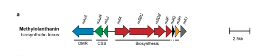

Metallophore synthetase component (mllA) belonging to the IucA/IucC family of NRPS-independent siderophore (NIS) synthetases. mllA corresponds to locus MexAM1_META1p4132 in the methylolanthanin (mll) biosynthetic gene cluster (META1p4129-4138). By homology to the IucA/IucC family it is expected to act as an ATP-dependent amide-bond-forming ligase that adenylates a carboxylate (citrate) and condenses it with an amine/hydroxamate nucleophile during biosynthesis of methylolanthanin, the first characterized biological lanthanide chelator (lanthanophore). Methylolanthanin solubilizes poorly bioavailable lanthanides (rare earth elements), which are essential cofactors for XoxF-type lanthanide-dependent methanol dehydrogenases. The mll cluster is highly upregulated (~32-fold) when lanthanides are poorly bioavailable (Nd2O3 vs NdCl3). The exact catalytic step and substrate specificity of the mllA protein itself have not been directly biochemically demonstrated; enzyme chemistry is inferred from the IucA/IucC family mechanism plus cluster-level functional genetics and metabolite structure.
Definition: The chemical reactions and pathways resulting in the formation of lanthanophores, small molecules that chelate lanthanide rare earth elements to facilitate their uptake by organisms
Supporting Evidence:
| GO Term | Evidence | Action | Reason |
|---|---|---|---|
|
GO:0016881
acid-amino acid ligase activity
|
IEA
GO_REF:0000117 |
ACCEPT |
Summary: Correct molecular function. IucA/IucC-family NIS synthetases are ATP-dependent ligases that form an amide bond between a carboxylate and an amine/hydroxamate via an acyl-adenylate (acyl-AMP) intermediate, matching the GO:0016881 definition (ligation of an acid to an amino acid via a carbon-nitrogen bond with concomitant hydrolysis of ATP). The function is conserved whether the product is an iron-siderophore or a lanthanide-metallophore. By homology mllA is expected to adenylate citrate and condense it with a modified amino acid nucleophile, the initial condensation step in methylolanthanin biosynthesis. Note that the exact substrates and catalytic step of mllA itself have not been directly reconstituted, so this molecular function is supported by family-level homology rather than direct enzyme assay.
Reason: The IucA/IucC family assignment (UniProt; Pfam PF04183) and the falcon and cyberian deep research support an ATP-dependent acid:amine ligase mechanism that is the defining chemistry of GO:0016881. This is the best-supported representation of the core molecular function.
Supporting Evidence:
file:METEA/mllA/mllA-deep-research-falcon.md
ATP-dependent carboxylate adenylation and amide formation
file:METEA/mllA/mllA-deep-research-cyberian.md
MllA functions as an NRPS-independent siderophore synthetase that catalyzes the initial condensation step in methylolanthanin biosynthesis
|
|
GO:0019290
siderophore biosynthetic process
|
IEA
GO_REF:0000002 |
KEEP AS NON CORE |
Summary: Analogous but not specific. mllA participates in biosynthesis of methylolanthanin, a LANTHANIDE-chelating metallophore (lanthanophore), not an iron(III)-chelating siderophore. GO:0019290 is explicitly defined for Fe(III)-chelating siderophores, so it is not the correct product. The chemistry and gene family are homologous to siderophore biosynthesis (the mll locus is homologous to petrobactin/rhodopetrobactin/roseobactin NIS systems), but the product chelates lanthanides not iron [PMID:39078674]. No specific GO term exists for lanthanophore biosynthesis yet (see proposed_new_terms). Retained as non-core because the pathway membership is real and experimentally supported, but the iron-specific label mischaracterizes the product.
Reason: The siderophore-biosynthesis term captures the correct enzyme family and pathway analogy but is iron-specific, whereas mllA contributes to a lanthanophore. Keep as non-core pending a lanthanophore biosynthetic process term.
Supporting Evidence:
file:METEA/mllA/mllA-deep-research-falcon.md
mllA is a biosynthetic component of the methylolanthanin pathway, which produces a lanthanide-binding metallophore (lanthanophore)
|
Gene: mllA (OrderedLocusName: MexAM1_META1p4132)
UniProt Accession: C5B1I4
Organism: Methylorubrum extorquens (strain ATCC 14718 / DSM 1338 / JCM 2805 / NCIMB 9133 / AM1)
Protein Family: IucA/IucC family (NRPS-independent siderophore synthetases)
The mllA gene (META1p4132) in Methylorubrum extorquens AM1 encodes a critical component of the methylolanthanin biosynthetic pathway, representing the first characterized lanthanophore biosynthesis system in bacteria[zytnick-2024-methylolanthanin]. This protein belongs to the IucA/IucC family of nonribosomal peptide synthetase-independent (NIS) siderophore synthetases, enzymes that catalyze ATP-dependent condensation reactions to assemble metallophore molecules without requiring the large modular NRPS machinery[bailey-2018-aerobactin-biosynthesis]. MllA shares 50% sequence identity with AsbA from Bacillus subtilis, a well-characterized petrobactin biosynthesis enzyme, positioning it as a Type A NIS synthetase that utilizes citrate as its primary substrate[zytnick-2024-methylolanthanin]. The discovery and characterization of this enzyme has illuminated how methylotrophic bacteria acquire lanthanide cofactors essential for their metabolism, particularly for lanthanide-dependent methanol dehydrogenases that enable growth on single-carbon compounds.
MllA exhibits the characteristic domain organization of IucA/IucC family proteins, featuring multiple conserved domains that facilitate its catalytic function. The protein contains the Aerobactin_biosyn_IucA/IucC_N domain (IPR007310), which represents the N-terminal region characteristic of this enzyme family and is essential for substrate recognition and binding. Additionally, MllA possesses the IucA/IucC-like C-terminal domain (IPR022770), which contributes to the overall three-dimensional architecture and catalytic mechanism. The complete protein falls within the IucA/IucC-like superfamily (IPR037455), encompassing the full complement of structural features required for NIS synthetase activity.
Based on structural studies of homologous enzymes, particularly IucA from the aerobactin biosynthetic pathway, MllA is predicted to adopt a three-domain architecture often described as a "cupped hand" structure, with thumb, fingers, and palm regions that create a substrate-binding pocket[bailey-2018-aerobactin-biosynthesis]. This architecture facilitates the ordered binding of multiple substrates and positions them appropriately for the condensation reaction. A particularly important structural feature likely present in MllA is the "550 loop," a flexible region that becomes ordered upon substrate binding and contains conserved asparagine residues critical for positioning the nucleophile substrate[bailey-2020-iuca-ordered-mechanism]. This loop region has been shown to be disordered in crystal structures of IucA, IucC, AcsD, AlcC, and DfoC, suggesting it is a conserved dynamic element across the NIS synthetase family[carroll-2018-nis-review][patel-2025-nis-review]. Comprehensive reviews of NIS synthetase structure and function confirm that these architectural features are conserved across the enzyme family, reflecting a common catalytic strategy for ATP-dependent amide bond formation between carboxylates and amine nucleophiles[patel-2025-nis-review].
MllA functions as an NRPS-independent siderophore synthetase that catalyzes the initial condensation step in methylolanthanin biosynthesis[zytnick-2024-methylolanthanin]. As a Type A NIS synthetase, MllA utilizes citrate as one of its substrates, distinguishing it from Type B enzymes that react with α-ketoglutarate and Type C enzymes that use citrate or succinate derivatives[bailey-2020-iuca-ordered-mechanism][carroll-2018-nis-review]. The enzyme catalyzes an ATP-dependent two-step reaction analogous to that performed by IucA in aerobactin biosynthesis. NIS synthetases operate by adenylating a carboxylic acid substrate followed by nucleophilic attack by an amine or alcohol, forming amide or ester linkages without requiring the large modular NRPS machinery[patel-2025-nis-review].
The catalytic mechanism of MllA, inferred from detailed studies of its homolog IucA, likely proceeds through an ordered sequential mechanism[bailey-2020-iuca-ordered-mechanism]. In this mechanism, ATP binds first to the enzyme, followed by citrate, and finally the modified amino acid nucleophile. Only after formation of the complete quaternary complex (enzyme-ATP-citrate-nucleophile) does the chemical reaction proceed. The first partial reaction involves adenylation of citrate to form a citryl-AMP intermediate, activating one of citrate's carboxylate groups for nucleophilic attack. In the second partial reaction, this activated intermediate reacts with the α-amino group of a modified lysine derivative to form a new amide bond, creating the biosynthetic intermediate that carries the first arm of the metallophore scaffold.
Studies of IucA have revealed critical active site residues that are likely conserved in MllA. The citrate-binding site involves multiple residues that coordinate the substrate's three carboxylate groups, with particular importance placed on residues equivalent to His147, Thr284, Arg288, and His425 in IucA[bailey-2020-iuca-ordered-mechanism]. The nucleophile-binding site positions the incoming modified amino acid for attack on the citryl-AMP intermediate, with residues equivalent to Leu423, Tyr479, and Tyr483 playing structural roles. Perhaps most critically, the conserved Asn-Glu-Asn motif on the flexible 550 loop is essential for catalytic activity, with mutation of the asparagine residues abolishing enzyme function[bailey-2020-iuca-ordered-mechanism].
The ordered mechanism employed by MllA has important functional implications. By requiring ATP and citrate to bind before the nucleophile, the enzyme ensures proper positioning of all reactive groups and prevents wasteful hydrolysis of the citryl-AMP intermediate. This sequential binding also contributes to the enzyme's substrate specificity, as the binding pocket undergoes conformational changes with each substrate addition that prepare it for the next binding event. The stereoselectivity observed in IucA, which produces exclusively the 3S-citryl derivative through enantioselective desymmetrization of citrate, is likely also a feature of MllA, ensuring production of a single stereoisomer of the methylolanthanin intermediate[bailey-2018-aerobactin-biosynthesis].
MllA functions as part of a ten-gene biosynthetic cluster (META1p4129-4138, also designated mll/mlu) that produces methylolanthanin, the first structurally characterized lanthanophore[zytnick-2024-methylolanthanin]. This cluster exhibits homology to biosynthetic gene clusters responsible for transport, regulation, and biosynthesis of NRPS-independent siderophores containing citrate and aromatic moieties, including petrobactin, rhodopetrobactin, and roseobactin. The organization and predicted functions of the genes in this cluster reveal a sophisticated system for metallophore production and regulation.
The cluster begins with regulatory and transport components (META1p4129-4131, designated mluARI) that encode an outer membrane TonB-dependent receptor, an anti-sigma factor, and a sigma factor for cell-surface signaling and transcriptional regulation. These components likely mediate feedback regulation in response to lanthanide availability, similar to systems observed in iron siderophore biosynthesis. The biosynthetic core of the cluster comprises META1p4132-4135, with MllA (META1p4132) serving as the initial synthetase. This is followed by META1p4133 (mllBC), a gene fusion encoding both an NRPS-like synthetase and an adenylation domain with 52% and 56% identity respectively to petrobactin pathway components. META1p4134 (mllDE) represents another fusion protein combining aryl carrier protein and ligase domains with 54% homology to asbD/asbE from the petrobactin pathway. META1p4135 (mllF) encodes a predicted 3,4-dihydroxybenzoate synthase homolog with 52% identity to known enzymes, though interestingly, the final methylolanthanin product contains 4-hydroxybenzoate rather than 3,4-dihydroxybenzoate moieties. META1p4137 (mllH) encodes a GNAT family acetyltransferase with 74% identity to enzymes in the rhodopetrobactin pathway, responsible for acetylating the homospermidine linkers in the final product.
The complete biosynthetic pathway produces methylolanthanin, a molecule consisting of a central citrate group linked to two 4-hydroxybenzoate (4-HB) moieties via homospermidine residues, each acetylated at the central amine[zytnick-2024-methylolanthanin]. This structure represents a unique metallophore scaffold not previously described, distinguished particularly by the presence of monohydroxybenzoate groups rather than the dihydroxybenzoate groups found in related siderophores like petrobactin. MllA initiates this biosynthetic sequence by catalyzing the first condensation reaction that links citrate to a modified precursor, establishing the central scaffold upon which subsequent enzymatic steps elaborate to build the complete metallophore structure.
While direct experimental evidence for MllA localization has not been reported, the enzyme is predicted to function in the cytoplasm based on the absence of signal sequences and the cytoplasmic location of other characterized NIS synthetases[bailey-2018-aerobactin-biosynthesis]. The biosynthesis of methylolanthanin likely occurs entirely within the cytoplasm, with the completed metallophore subsequently secreted to the extracellular environment where it can chelate lanthanides. The presence of a TonB-dependent receptor (encoded by mluA/META1p4129) in the biosynthetic cluster suggests that the lanthanide-loaded methylolanthanin complex is then recognized and transported back into the cell through the outer membrane, a mechanism analogous to classical siderophore uptake systems[zytnick-2024-methylolanthanin].
The cellular context of methylolanthanin function extends beyond simple biosynthesis and secretion. Studies of lanthanide homeostasis in M. extorquens AM1 have revealed that lanthanides are stored within the cell as cytoplasmic inclusions resembling polyphosphate granules[roszczenko-2020-lanthanide-homeostasis]. This storage mechanism suggests a sophisticated system for managing lanthanide availability, with MllA-produced methylolanthanin facilitating the initial acquisition of lanthanides from the environment, followed by intracellular storage and mobilization for incorporation into lanthanide-dependent enzymes.
The expression of mllA and the entire methylolanthanin biosynthetic cluster is highly responsive to lanthanide availability and solubility. Quantitative proteomics studies have demonstrated that the genes META1p4129 through META1p4138 are among the most strongly upregulated genes in M. extorquens AM1 when cells are grown with poorly soluble neodymium oxide (Nd2O3) compared to growth with soluble neodymium chloride (NdCl3), showing an average 32-fold increase in expression[zytnick-2024-methylolanthanin]. This dramatic upregulation indicates that the cell recognizes lanthanide limitation or poor bioavailability and responds by increasing production of the metallophore machinery needed to scavenge these essential metals from recalcitrant environmental sources.
The regulation of the mll cluster likely involves the sigma factor/anti-sigma factor pair encoded by META1p4130 and META1p4131, which would enable rapid transcriptional responses to changes in lanthanide-metallophore complexes detected at the outer membrane. This regulatory architecture is characteristic of metal acquisition systems in bacteria, where metal-loaded metallophores binding to outer membrane receptors trigger conformational changes that release sigma factors, which then activate transcription of biosynthetic and uptake genes. Such regulatory mechanisms ensure that metallophore production is coordinated with cellular metal requirements, preventing wasteful overproduction when metals are readily available while ensuring adequate synthesis when metals are limiting.
The physiological context for this regulation becomes clear when considering the dual methanol dehydrogenase systems in M. extorquens AM1. The organism encodes both calcium-dependent (MxaFI) and lanthanide-dependent (XoxF) methanol dehydrogenases[roszczenko-2020-lanthanide-homeostasis]. When lanthanides are abundant and bioavailable, cells preferentially express XoxF-type enzymes, which provide superior catalytic efficiency for methylotrophic growth. Under these conditions, the mll cluster expression remains at basal levels. However, when lanthanides are present but poorly soluble or complexed in forms that are difficult to access, the cell dramatically upregulates the mll cluster to produce the methylolanthanin needed to solubilize and acquire these metals, enabling continued use of the more efficient XoxF pathway.
The biological significance of MllA and the methylolanthanin system it helps produce extends far beyond simple metal acquisition, touching on fundamental aspects of bacterial methylotrophy and metal-dependent metabolism. Methylotrophy, the ability to grow on reduced single-carbon compounds like methanol, is a metabolic capability of major ecological importance in environments where plant-derived methanol is abundant. Pink-pigmented facultative methylotrophic bacteria of the genera Methylobacterium and Methylorubrum are ubiquitous plant symbionts that utilize methanol produced during pectin demethylation in plant cell walls[juma-2022-siderophore-methylobacterium]. The efficiency of this methylotrophic lifestyle depends critically on methanol dehydrogenase enzymes, and the lanthanide-dependent XoxF-type enzymes significantly outperform their calcium-dependent MxaFI counterparts in catalytic efficiency.
Experimental evidence demonstrates the functional importance of the mll cluster and MllA in lanthanide-dependent physiology. Deletion mutants lacking the methylolanthanin biosynthetic genes show an 1.8-fold decrease in neodymium bioaccumulation compared to wild-type cells, while overexpression of the cluster increases accumulation 3.5-fold[zytnick-2024-methylolanthanin]. These findings establish that methylolanthanin production is required for wild-type levels of lanthanide acquisition and accumulation. The consequences of this reduced lanthanide uptake would be decreased availability of lanthanide cofactors for incorporation into XoxF methanol dehydrogenases, potentially limiting methylotrophic growth under conditions where lanthanides are the available metal but are poorly soluble or complexed.
The discovery of methylolanthanin and characterization of MllA has revealed that bacteria employ siderophore-like metallophores not only for iron acquisition but also for acquiring rare earth elements. This finding has been reinforced by studies in related Methylobacterium species, where siderophores have been shown to have dual roles in both iron and lanthanide acquisition[juma-2022-siderophore-methylobacterium]. In Methylobacterium aquaticum strain 22A, the staphyloferrin B-like siderophore can solubilize insoluble lanthanide oxides and function as a lanthanophore, demonstrating that different Methylobacterium/Methylorubrum species have evolved distinct metallophore systems for lanthanide acquisition. Genomic analysis of 60 Methylobacterium genomes identified a total of 66 siderophore synthesis gene clusters distributed across 10 different structural types, suggesting remarkable diversity in metallophore chemistry across the genus[juma-2022-siderophore-methylobacterium].
The evolutionary relationships among NIS synthetases provide important context for understanding MllA function. The IucA/IucC family represents a widespread solution to the challenge of assembling hydroxamate and carboxylate siderophores without the metabolic cost of maintaining large NRPS gene clusters. MllA's 50% sequence identity to AsbA from the petrobactin pathway in Bacillus subtilis suggests these enzymes diverged from a common ancestor, with subsequent specialization for different metallophore products and potentially different metal specificities (iron for petrobactin, lanthanides for methylolanthanin). The methylolanthanin biosynthetic cluster also shows homology to the rhodopetrobactin cluster from Rhodopseudomonas palustris TIE-1, suggesting that lanthanophore biosynthesis may be more widespread among bacteria than currently appreciated[zytnick-2024-methylolanthanin].
The structural uniqueness of methylolanthanin, particularly its incorporation of 4-hydroxybenzoate moieties instead of the 3,4-dihydroxybenzoate groups found in petrobactin and rhodopetrobactin, raises interesting questions about substrate specificity and product evolution. Despite encoding a predicted 3,4-dihydroxybenzoate synthase (MllF), the pathway produces 4-hydroxybenzoate-containing products, suggesting either that MllF has evolved altered specificity or that downstream modification steps remove one hydroxyl group[zytnick-2024-methylolanthanin]. This modification may be functionally significant, potentially tuning the metal-binding properties of methylolanthanin to favor lanthanides over iron, though this hypothesis awaits experimental validation.
The mllA-containing methylolanthanin biosynthetic cluster functions as part of a larger cellular system for lanthanide homeostasis in M. extorquens AM1. This system includes the lut (lanthanide utilization and transport) cluster (META1_1778-1787), which encodes a TonB-dependent receptor (LutH), ABC-type transporter components, multiple periplasmic binding proteins, and lanmodulin, a highly selective lanthanide-binding protein[roszczenko-2020-lanthanide-homeostasis]. The relationship between these systems suggests a division of labor: the mll cluster produces and secretes the metallophore for environmental scavenging, while the lut cluster handles the subsequent recognition, transport, and delivery of lanthanide-loaded metallophores to appropriate cellular destinations.
Interestingly, M. extorquens AM1 also possesses an exclusive TonB-dependent receptor for lanthanide uptake (LutH), suggesting that the organism may have multiple routes for lanthanide acquisition beyond the methylolanthanin system[juma-2022-siderophore-methylobacterium]. This redundancy likely reflects the critical importance of lanthanide acquisition for the organism's methylotrophic lifestyle. The integration of these various systems—metallophore biosynthesis and secretion, outer membrane recognition and transport, inner membrane transport, intracellular storage, and cofactor incorporation—represents a sophisticated cellular machinery comparable in complexity to well-studied iron homeostasis systems but adapted for the unique chemistry and biology of lanthanide metals.
Although the three-dimensional structure of MllA itself has not been determined, extensive structural and mechanistic studies of its close homologs IucA and IucC from aerobactin biosynthesis provide detailed insights into how this family of enzymes functions[bailey-2018-aerobactin-biosynthesis][bailey-2020-iuca-ordered-mechanism]. These studies have revealed that NIS synthetases employ an elegant catalytic strategy that ensures substrate specificity and stereochemical control while avoiding the large protein scaffolds required by NRPS systems.
The crystal structure of IucA reveals a three-domain architecture with distinct substrate-binding pockets for ATP, citrate, and the nucleophile[bailey-2020-iuca-ordered-mechanism]. The ATP-binding site is positioned to facilitate adenylation of citrate, with the adenylated intermediate remaining bound while awaiting attack by the nucleophile. The citrate-binding site must accommodate the substrate's three carboxylate groups while specifically orienting one for adenylation and subsequent nucleophilic attack. Residues in this site not only bind the substrate but also contribute to stereochemical control—IucA produces exclusively the 3S-citryl derivative despite citrate being achiral, achieving this through asymmetric binding that exposes only one of citrate's two pro-chiral carboxylates for reaction.
The most intriguing structural feature is the 550 loop, a region of approximately 10 residues that is disordered in all crystal structures but is essential for catalysis[bailey-2020-iuca-ordered-mechanism]. This loop contains a conserved Asn-Glu-Asn motif, and mutation of either asparagine residue to alanine completely abolishes activity with the nucleophile substrate. The loop is proposed to become ordered upon nucleophile binding, positioning these asparagine residues to activate the nucleophile's α-amino group for attack on the citryl-AMP intermediate. This dynamic structural element thus plays a gating role, ensuring that the adenylated intermediate is only attacked when the correct nucleophile is present and properly positioned.
Kinetic studies of IucA have quantified the enzyme's catalytic parameters, revealing kcat values of 0.35-0.85 s⁻¹ depending on which substrate is varied, and KM values in the range of 0.05-0.79 mM[bailey-2020-iuca-ordered-mechanism]. While these values represent moderate catalytic efficiency by enzyme standards, they are appropriate for biosynthetic enzymes where reaction flux is often controlled by substrate availability rather than enzyme saturation. The complete aerobactin biosynthetic pathway, incorporating the activities of IucD, IucB, IucA, and IucC, operates with an overall turnover frequency of approximately 6 min⁻¹ under saturating conditions[bailey-2018-aerobactin-biosynthesis], suggesting that this pace of metallophore production is sufficient for cellular needs.
By analogy to these detailed studies of IucA and IucC, MllA is predicted to employ similar structural and mechanistic strategies. The enzyme likely adopts the characteristic three-domain architecture, utilizes an ordered binding mechanism to ensure proper substrate positioning and prevent wasteful side reactions, employs a flexible loop element for nucleophile activation, and achieves stereochemical control through asymmetric substrate binding. These conserved features reflect the fundamental chemical challenges of coupling citrate to modified amino acids in an ATP-dependent manner, challenges that the IucA/IucC family has solved through a common structural and mechanistic framework that can be adapted to produce diverse metallophore products.
The substrate specificity of NIS synthetases like MllA determines both the fidelity of metallophore biosynthesis and the potential for producing variant structures. Studies of IucA have examined how the enzyme discriminates among potential substrates, revealing both strict requirements and some flexibility[bailey-2020-iuca-ordered-mechanism]. For the carboxylic acid substrate, IucA shows strong preference for citrate but can utilize tricarballylic acid, which lacks citrate's central hydroxyl group, albeit with reduced efficiency. However, the enzyme rejects glutarate and α-ketoglutarate, demonstrating that the three-carboxylate structure is essential for productive binding. This indicates that while the central hydroxyl contributes to binding affinity and catalytic efficiency, the tertiary carboxylate is absolutely required.
For the nucleophile substrate, IucA is specific for N6-acetyl-N6-hydroxylysine in the aerobactin pathway, but related enzymes in the family accept different modified amino acids or polyamines. AsbA from the petrobactin pathway uses spermidine rather than a modified lysine, while enzymes in the desferrioxamine pathway utilize other substrates. This substrate flexibility across the family suggests that MllA has evolved specificity for homospermidine or a modified derivative thereof, consistent with the structure of methylolanthanin which contains homospermidine linkers connecting citrate to the aromatic groups. The acetylation of these homospermidine moieties is performed by MllH, the GNAT family acetyltransferase, either before or after MllA-catalyzed condensation, though the exact order of these modifications remains to be experimentally determined.
The biosynthetic flexibility of the pathway is also evident in the production of the aromatic moieties. While the cluster encodes a predicted 3,4-dihydroxybenzoate synthase (MllF), the final product contains 4-hydroxybenzoate groups. This discrepancy could arise through several mechanisms: MllF might have evolved altered regiospecificity to produce 4-hydroxybenzoate directly, or a downstream enzyme might remove one hydroxyl group from an initially produced 3,4-dihydroxybenzoate intermediate. Understanding the resolution of this apparent inconsistency will require biochemical reconstitution of the pathway in vitro or detailed analysis of pathway intermediates in vivo.
The evolution of MllA and the methylolanthanin system provides a fascinating example of how bacteria have repurposed iron-scavenging machinery for acquiring rare earth elements. Classical siderophores are small-molecule iron chelators that bacteria secrete to solubilize and acquire iron from their environment, a strategy necessitated by iron's extremely low solubility at neutral pH under aerobic conditions. The structural and mechanistic parallels between siderophore biosynthesis and lanthanophore biosynthesis are striking: both employ similar enzymatic machinery (NIS synthetases), similar transport systems (TonB-dependent receptors and ABC transporters), and similar regulatory logic (metal-responsive transcription)[roszczenko-2020-lanthanide-homeostasis].
However, lanthanides and iron differ substantially in their chemistry and biological roles. Iron is a transition metal that undergoes redox cycling between Fe²⁺ and Fe³⁺ states, a property essential for its function in enzymes like cytochromes and iron-sulfur proteins but also responsible for its participation in potentially harmful Fenton chemistry. Lanthanides, in contrast, are redox-inert under biological conditions, existing exclusively in the 3+ oxidation state. This redox inertness makes them unsuitable for electron transfer reactions but ideal for Lewis acid catalysis, where their role is to activate substrates through coordination rather than electron transfer. In XoxF-type methanol dehydrogenases, the lanthanide cofactor serves precisely this role, activating the alcohol substrate for hydride transfer without undergoing redox changes itself.
The chelating groups used in siderophores versus lanthanophores reflect these chemical differences. Many iron siderophores employ hydroxamate groups, which bind Fe³⁺ very tightly through bidentate coordination of the hydroxamate oxygen atoms. Methylolanthanin, in contrast, employs a combination of carboxylate groups from citrate and hydroxyl groups from 4-hydroxybenzoate, along with amine nitrogens from the homospermidine linkers. This mixed-ligand system likely provides the appropriate binding affinity and selectivity for lanthanides while also allowing for metal release upon reduction of the chelator or changes in pH within the cell. Understanding the exact coordination chemistry of methylolanthanin with different lanthanides remains an important area for future investigation.
Studies in Methylobacterium aquaticum strain 22A have demonstrated that even within the Methylobacterium/Methylorubrum genus, different species employ structurally distinct metallophores for lanthanide acquisition[juma-2022-siderophore-methylobacterium]. Strain 22A produces a staphyloferrin B-like siderophore that can function as both a siderophore for iron and a lanthanophore for rare earths, depending on environmental conditions. This dual functionality is particularly elegant, allowing the bacterium to use a single metallophore system to acquire whichever metal is limiting. The IucA/IucC family genes sbnC and sbnF in the staphyloferrin B cluster play analogous roles to mllA in methylolanthanin biosynthesis, catalyzing the ATP-dependent condensation reactions that build the metallophore scaffold. The diversity of metallophore systems across Methylobacterium species suggests that acquisition of lanthanides has been a significant selective pressure in the evolution of this bacterial group, driving innovation in metal-chelating chemistry.
The ultimate functional context for MllA and methylolanthanin is their enabling role in lanthanide-dependent methylotrophy. Methylotrophy is not merely an alternative metabolic pathway but rather a lifestyle that has allowed Methylobacterium and Methylorubrum species to occupy the phyllosphere niche in association with plants. Plants produce copious amounts of methanol during pectin demethylation reactions involved in cell wall synthesis, creating a carbon source that is abundant in the phyllosphere but toxic to many organisms and challenging to metabolize efficiently. Methylotrophic bacteria solve this challenge through specialized methanol dehydrogenase enzymes that oxidize methanol to formaldehyde, which then enters central metabolism through specialized pathways.
The discovery that lanthanide-dependent XoxF-type methanol dehydrogenases significantly outperform calcium-dependent MxaFI enzymes has reframed our understanding of methylotrophy. Under conditions where lanthanides are available, bacteria preferentially express XoxF enzymes, suggesting these provide a selective advantage. However, lanthanides exist in the environment primarily as insoluble oxides and minerals, creating a bioavailability problem analogous to that faced with iron. The evolution of methylolanthanin biosynthesis, with MllA as a key biosynthetic enzyme, represents the bacterial solution to this bioavailability problem. By producing a lanthanide-specific metallophore capable of solubilizing poorly accessible lanthanide sources, M. extorquens AM1 can access the superior catalytic efficiency of XoxF enzymes even when lanthanides are present in recalcitrant forms.
The 32-fold upregulation of the mll cluster when cells are grown with poorly soluble Nd2O3 versus soluble NdCl3 demonstrates that bacteria actively sense lanthanide bioavailability and respond by increasing metallophore production[zytnick-2024-methylolanthanin]. This regulatory logic ensures that cells invest in metallophore biosynthesis only when needed—when lanthanides are present but difficult to access. Under conditions where lanthanides are readily bioavailable or completely absent, the cell can maintain low basal expression of the mll cluster, avoiding the metabolic cost of unnecessary metallophore production. This regulated response integrates with the broader lanthanide homeostasis machinery, including the lut transport cluster and lanmodulin-mediated intracellular lanthanide handling, to create a comprehensive system for managing these essential but sometimes scarce metal cofactors.
Despite significant recent progress in understanding MllA and methylolanthanin biosynthesis, numerous important questions remain unanswered. The precise order of biosynthetic steps in the pathway has not been fully elucidated—specifically, whether homospermidine acetylation by MllH occurs before or after MllA-catalyzed condensation with citrate, and how the aromatic moieties are synthesized and attached to the growing metallophore. Biochemical reconstitution of the pathway in vitro would resolve these questions and enable detailed kinetic and mechanistic studies of each step.
The three-dimensional structure of MllA itself remains undetermined. While homology modeling based on IucA and AsbA structures can provide predictions, experimental structure determination through X-ray crystallography or cryo-electron microscopy would reveal the specific substrate-binding pockets, conformational states, and structural adaptations that tune MllA for its specific substrates and products. Structures of MllA in complex with substrates, products, and intermediate states would be particularly valuable for understanding the catalytic mechanism and stereochemical control.
The exact coordination chemistry of methylolanthanin with different lanthanide ions requires detailed investigation. While the study by Zytnick et al. demonstrated that methylolanthanin can form complexes with lanthanum, neodymium, and lutetium, representing light, middle, and heavy rare earths respectively, the detailed coordination geometry, stoichiometry, and thermodynamic stability constants remain to be determined[zytnick-2024-methylolanthanin]. Recent comparative binding studies (2024) of methylolanthanin and the structurally related rhodopetrobactin B have revealed unexpected complexity: both metallophores appear to precipitate lanthanides under biologically relevant pH and concentration conditions, raising questions about the mechanism of lanthanide delivery to cells. Understanding whether methylolanthanin shows selectivity among different lanthanides, how precipitation relates to biological function, and whether this selectivity matches the lanthanide preferences of XoxF methanol dehydrogenases, would illuminate the chemical logic of the system.
The biosynthetic discrepancy between the predicted 3,4-dihydroxybenzoate synthase activity of MllF and the 4-hydroxybenzoate groups actually present in methylolanthanin requires resolution. Does MllF produce 4-hydroxybenzoate directly, suggesting annotation error or evolved specificity change? Or does an unidentified enzyme remove one hydroxyl group from an initially produced 3,4-dihydroxybenzoate intermediate? Answering this question will require either in vitro characterization of MllF or analysis of pathway intermediates.
The question of how widespread lanthanophore biosynthesis is among bacteria represents a broader area for investigation. The identification of rhodopetrobactin from Rhodopseudomonas palustris as a related system suggests that lanthanophore production may occur in diverse bacterial lineages[zytnick-2024-methylolanthanin]. Genome mining approaches searching for mll-like clusters could reveal the distribution of these systems and potentially identify novel lanthanophore structures. Given that many bacteria encode lanthanide-dependent enzymes, it seems likely that lanthanophore biosynthesis is more widespread than currently appreciated, but most systems may produce molecules structurally distinct from methylolanthanin.
Finally, the ecological and evolutionary context for lanthanophore biosynthesis remains largely unexplored. Do environmental lanthanide concentrations and bioavailability vary sufficiently to impose selective pressure for metallophore-based acquisition? How do bacteria compete for lanthanides in mixed communities, and do different species' metallophores show differential selectivity that partitions lanthanide resources? In plant-associated environments where Methylorubrum species thrive, what is the relative importance of lanthanide-dependent versus calcium-dependent methylotrophy, and how does metallophore production influence the competitive fitness of these bacteria? Addressing these ecological questions will require field studies, microbial community analyses, and experimental evolution approaches that go beyond the biochemistry and cell biology that have dominated lanthanide biology research to date.
bailey-2018-aerobactin-biosynthesis: Bailey DC, Alexander E, Rice MR, Drake EJ, Mydy LS, Aldrich CC, Gulick AM. Structural and functional delineation of aerobactin biosynthesis in hypervirulent Klebsiella pneumoniae. J Biol Chem. 2018 May 18;293(20):7841-7852. doi: 10.1074/jbc.RA118.002798. PMID: 29618511; PMCID: PMC5961048.
bailey-2020-iuca-ordered-mechanism: Mydy LS, Bailey DC, Patel KD, Rice MR, Gulick AM. The Siderophore Synthetase IucA of the Aerobactin Biosynthetic Pathway Uses an Ordered Mechanism. Biochemistry. 2020 Jun 16;59(23):2143-2153. doi: 10.1021/acs.biochem.0c00250. PMID: 32432457; PMCID: PMC7325057.
carroll-2018-nis-review: Carroll CS, Moore MM. Ironing out siderophore biosynthesis: a review of non-ribosomal peptide synthetase (NRPS)-independent siderophore synthetases. Crit Rev Biochem Mol Biol. 2018 Aug;53(4):356-381. doi: 10.1080/10409238.2018.1476449. PMID: 29863423.
juma-2022-siderophore-methylobacterium: Juma PO, Fujitani Y, Alessa O, Oyama T, Yurimoto H, Sakai Y, Tani A. Siderophore for Lanthanide and Iron Uptake for Methylotrophy and Plant Growth Promotion in Methylobacterium aquaticum Strain 22A. Front Microbiol. 2022 Jul 7;13:921635. doi: 10.3389/fmicb.2022.921635. PMID: 35875576; PMCID: PMC9301485.
patel-2025-nis-review: Patel KD, Fisk MB, Gulick AM. Discovery, functional characterization, and structural studies of the NRPS-independent siderophore synthetases. Crit Rev Biochem Mol Biol. 2024 Dec;59(6):447-471. doi: 10.1080/10409238.2025.2476476. Epub 2025 Mar 14. PMID: 40085133.
roszczenko-2020-lanthanide-homeostasis: Roszczenko-Jasińska P, Vu HN, Subuyuj GA, Creasor R, Buzzard CL, Lichtarge TJ, Good NM, Sousa EHS, Martinez-Gomez NC. Gene products and processes contributing to lanthanide homeostasis and methanol metabolism in Methylorubrum extorquens AM1. Sci Rep. 2020 Jul 29;10(1):12663. doi: 10.1038/s41598-020-69401-4. PMID: 32728125; PMCID: PMC7391723.
zytnick-2024-methylolanthanin: Zytnick AM, Gutenthaler-Tietze SM, Aron AT, Reitz ZL, Phi MT, Good NM, Petras D, Daumann LJ, Martinez-Gomez NC. Identification and characterization of a small-molecule metallophore involved in lanthanide metabolism. Proc Natl Acad Sci USA. 2024 Aug 6;121(32):e2322096121. doi: 10.1073/pnas.2322096121. PMID: 39078674; PMCID: PMC11317620.
The research report should be a detailed narrative explaining the function, biological processes, and localization of the gene product. Citations should be given for all claims.
You should prioritize authoritative reviews and primary scientific literature when conducting research. You can supplement
this with annotations you find in gene/protein databases, but these can be outdated or inaccurate.
We are specifically interested in the primary function of the gene - for enzymes, what reaction is catalyzed, and what is the substrate specificity? For transporters, what is the substrate? For structural proteins or adapters, what is the broader structural role? For signaling molecules, what is the role in the pathway.
We are interested in where in or outside the cell the gene product carries out its function.
We are also interested in the signaling or biochemical pathways in which the gene functions. We are less interested in broad pleiotropic effects, except where these elucidate the precise role.
Include evidence where possible. We are interested in both experimental evidence as well as inference from structure, evolution, or bioinformatic analysis. Precise studies should be prioritized over high-throughput, where available.
The gene symbol mllA in Methylorubrum extorquens AM1 (formerly Methylobacterium extorquens AM1) corresponds to locus META1p4132 (MexAM1_META1p4132) in the methylolanthanin (mll) biosynthetic gene cluster (BGC). This cluster produces methylolanthanin (MLL), a lanthanophore (lanthanide-binding metallophore) that improves lanthanide bioavailability and supports lanthanide-dependent methylotrophy and bioaccumulation. Evidence supports mllA’s role as an IucA/IucC-family NRPS-independent siderophore synthetase (NIS synthetase) component in MLL biosynthesis, but the specific catalytic step and substrate specificity of the mllA protein itself has not been directly biochemically reconstituted in the accessible sources; enzyme chemistry is therefore inferred from family mechanism plus cluster-level functional genetics and metabolite structure. (zytnick2022discoveryandcharacterization pages 3-5)
Gene symbol ambiguity check and mapping. In the lanthanophore study by Zytnick et al., the authors explicitly enumerate META1p4132–4135 as “mllA, mllBC, mllDE, and mllF”, establishing that META1p4132 is mllA in M. extorquens AM1. (zytnick2022discoveryandcharacterization pages 3-5)
Organism verification. The same work is performed in Methylobacterium/Methylorubrum extorquens AM1 and discusses the AM1 lanthanide uptake machinery (lut cluster) and the mll biosynthetic locus in this organism. (zytnick2022discoveryandcharacterization pages 1-3, zytnick2022discoveryandcharacterization pages 3-5)
Family/domain consistency. mllA is described as part of a BGC homologous to NRPS-independent siderophore systems (petrobactin/rhodopetrobactin/roseobactin-like) and is functionally interpreted as a siderophore synthetase component; mechanistic studies of IucA/IucC-family NIS synthetases provide a consistent biochemical framework (ATP-dependent carboxylate adenylation and amide formation) matching the user-provided UniProt family assignment. (zytnick2022discoveryandcharacterization pages 3-5, mydy2020thesiderophoresynthetase pages 7-10, gulick2024kineticanalysisof pages 1-2)
Metallophores are secreted small molecules that chelate metals to improve acquisition under low bioavailability. A lanthanophore is a metallophore specialized for lanthanides (Ln). In M. extorquens AM1, lanthanide-dependent methanol dehydrogenase systems are periplasmic, and lanthanide acquisition has been proposed to involve siderophore-like mechanisms (TonB-dependent uptake and ABC-type transport), motivating the search for lanthanide chelators. (zytnick2022discoveryandcharacterization pages 1-3, roszczenkojasinska2020geneproductsand pages 4-5)
Zytnick et al. report methylolanthanin (MLL) as the first characterized biological lanthanide chelator (lanthanophore) and show it forms lanthanide complexes detectable by mass spectrometry. (zytnick2022discoveryandcharacterization pages 1-3, zytnick2022discoveryandcharacterization pages 8-10)
NIS synthetases (including the IucA/IucC family) are ATP-dependent ligases that generate an amide bond between a carboxylate and an amine/hydroxamate via a two-step mechanism: (i) acyl-adenylate (acyl-AMP) formation with release of PPi, followed by (ii) nucleophilic attack by the amine/hydroxamate to displace AMP and form product. (gulick2024kineticanalysisof pages 1-2, mydy2020thesiderophoresynthetase pages 7-10)
Mechanistically, kinetic analyses support an ordered sequential substrate binding mechanism for IucA: ATP binds first, then citrate, then the hydroxamate donor. (mydy2020thesiderophoresynthetase pages 23-26, gulick2024kineticanalysisof pages 8-10)
Zytnick et al. identify a siderophore-like locus META1p4129–4138 and assign it as the mll (methylolanthanin) biosynthetic gene cluster, with associated uptake/regulatory elements. The cluster includes components consistent with coupling of metallophore biosynthesis to transport and transcriptional control, including a TonB-dependent outer membrane receptor plus cell-surface signaling (anti-sigma/sigma factor) features in the locus. (zytnick2022discoveryandcharacterization pages 3-5)
The locus architecture (including mllA/META1p4132) is shown in their gene-cluster schematic (Figure 2a). (zytnick2022discoveryandcharacterization media b0e60267)
MLL is structurally characterized as a citrate-containing molecule incorporating homospermidine-derived linkers and hydroxybenzoate moieties; MS/MS and NMR support incorporation of citrate and a para-hydroxybenzoate (4-HB) substitution pattern, with acetylated homospermidine features. (zytnick2022discoveryandcharacterization pages 5-8)
Given that (i) MLL incorporates citrate and amine-containing linkers and (ii) the mll locus is homologous to citrate-containing metallophore/siderophore BGCs, it is consistent that mllA functions as an ATP-dependent amide-forming enzyme in assembling citrate–amine linkages, as expected for an IucA/IucC-like NIS synthetase component. This is consistent with the IucA mechanistic model (citrate adenylation then nucleophilic attack by an amine/hydroxamate donor). (zytnick2022discoveryandcharacterization pages 3-5, mydy2020thesiderophoresynthetase pages 7-10, gulick2024kineticanalysisof pages 1-2)
Limitations: none of the accessible sources provide a purified mllA enzyme assay specifying its exact substrates or catalytic step; therefore, reaction and substrate specificity are inferred, not directly demonstrated for mllA. (zytnick2022discoveryandcharacterization pages 3-5, gulick2024kineticanalysisof pages 1-2)
In transcriptomics comparing growth with soluble vs poorly soluble lanthanide sources, Zytnick et al. report that the mll locus (META1p4129–4138) is highly induced (~32-fold) under Nd2O3 (poorly soluble) compared with NdCl3 (soluble), consistent with a role in mobilizing lanthanides when bioavailability is low. (zytnick2022discoveryandcharacterization pages 3-5)
The same low-bioavailability condition also shows increased expression of the lanthanide-dependent methanol dehydrogenase gene xoxF1 (5-fold), supporting the concept that lanthanide acquisition and lanthanide-dependent methylotrophy are coupled. (zytnick2022discoveryandcharacterization pages 3-5)
Lanthanide uptake in M. extorquens AM1 involves a dedicated lut (lanthanide utilization and transport) cluster proposed to function analogously to siderophore-mediated Fe(III) uptake, using TonB-dependent and ABC-type transport components. (roszczenkojasinska2020geneproductsand pages 4-5, roszczenkojasinska2019lanthanidetransportstorage pages 8-12)
Roszczenko-Jasińska et al. provide experimental evidence for this model: they report that a TonB–ABC transport system is required for lanthanide incorporation into the cytoplasm, that expression of the TonB receptor is repressed when lanthanides are in excess, and that lanthanides are stored as cytoplasmic inclusions resembling polyphosphate granules. (roszczenkojasinska2020geneproductsand pages 1-4, roszczenkojasinska2020geneproductsand pages 4-5)
Within this cell architecture:
- MLL biosynthesis (including mllA function) is most plausibly cytosolic (as a soluble biosynthetic enzyme), while
- MLL action is extracellular/periplasm-linked (chelation and delivery to uptake), and
- lanthanides ultimately can be stored intracellularly (cytoplasm) as phosphate-associated deposits/granules. (zytnick2022discoveryandcharacterization pages 1-3, roszczenkojasinska2020geneproductsand pages 4-5)
Zytnick et al. further note cluster components predicted for regulation/transport, including a DUF4142 (ferritin-like) protein predicted to be exported to the periplasm, supporting multi-compartment pathway organization even if mllA itself is not localized directly. (zytnick2022discoveryandcharacterization pages 3-5)
Zytnick et al. report multiple orthogonal lines of evidence that the mll cluster produces a functional lanthanophore:
- MLL detected in supernatants of strains with intact/overexpressed cluster and absent in deletion backgrounds, with a defined m/z consistent with the product family. (zytnick2022discoveryandcharacterization pages 5-8)
- MLL binds lanthanides, forming detectable complexes with La, Nd, and Lu. (zytnick2022discoveryandcharacterization pages 8-10)
- Exogenous MLL (50 nM) improves growth yield under lanthanide conditions. (zytnick2022discoveryandcharacterization pages 8-10)
- mll overexpression increases lanthanide bioaccumulation (~3.5-fold average) and rescues growth defects on poorly bioavailable Nd2O3. (zytnick2022discoveryandcharacterization pages 8-10)
- Deleting the cluster causes bioaccumulation defects, though the cluster is reported as not essential under some lab conditions, consistent with redundancy/alternative uptake routes. (zytnick2022discoveryandcharacterization pages 3-5, zytnick2022discoveryandcharacterization pages 10-12)
In Methylobacterium aquaticum strain 22A, Juma et al. show that an iucA/iucC-family-containing siderophore cluster (sbn) is involved in lanthanide handling and methylotrophy-related phenotypes:
- Wild-type spent medium solubilized ~24-fold more soluble La from La2O3 than spent medium from a siderophore mutant. (juma2022siderophoreforlanthanide pages 3-4)
- A siderophore biosynthesis mutant failed to grow on methanol unless supplemented with wild-type spent medium or citrate, supporting a causal connection between secreted chelators, lanthanide access, and methanol growth. (juma2022siderophoreforlanthanide pages 3-4)
These data reinforce that IucA/IucC-like NIS chemistry can be deployed in methylobacteria for lanthanide mobilization, supporting the inference for mllA as a biosynthetic component of a lanthanophore. (juma2022siderophoreforlanthanide pages 1-2, juma2022siderophoreforlanthanide pages 3-4)
Voutsinos et al. (BMC Biology; Feb 2024; https://doi.org/10.1186/s12915-024-01841-0) analyze 136 genomes from weathered granite/soil and report extensive secondary metabolism potential:
- ~1,900 biosynthetic gene clusters (BGCs) detected across genomes; 168 NRPS/PKS BGCs across 10 phyla. (voutsinos2024weatheredgranitesand pages 7-10)
- A metallophore-predictive TonB-dependent transporter co-occurred with 8 NRPS/PKS BGCs. (voutsinos2024weatheredgranitesand pages 7-10)
- The proportion of DNA encoding BGCs decreased from 0.53% (moderately weathered rock) to 0.34% (soil). (voutsinos2024weatheredgranitesand pages 7-10)
They argue that siderophore-like molecules may be required to solubilize lanthanides from minerals in situ and report co-occurrence of lanthanide methylotrophy genes with predicted metallophore systems in some genomes. (voutsinos2024weatheredgranitesand pages 1-2, voutsinos2024weatheredgranitesand pages 7-10)
Notably, they state they did not observe a system similar to the AM1 lanthanophore cluster in their reconstructed genomes, implying that lanthanide-chelation strategies may be diverse and not universal across lanthanide-methylotrophs in those environments. (voutsinos2024weatheredgranitesand pages 10-12, voutsinos2024weatheredgranitesand pages 7-10)
Gulick et al. (Methods in Enzymology; Jan 2024; https://doi.org/10.1016/bs.mie.2024.06.012) consolidate and extend mechanistic/kinetic frameworks for NIS synthetases, supporting more rigorous functional inference for IucA/IucC-like proteins such as mllA:
- NIS synthetases catalyze ATP-dependent amide formation through acyl-AMP intermediates; multiple carboxylates (often citrate) and amine donors are possible across the family. (gulick2024kineticanalysisof pages 1-2)
- For IucA, kinetic and structural analyses support an ordered binding mechanism: ATP first, then citrate, then hydroxamate donor. (gulick2024kineticanalysisof pages 8-10)
Good et al. (Environmental Science & Technology; Dec 2023; https://doi.org/10.1021/acs.est.3c06775) demonstrate a scalable, acid-free platform using M. extorquens AM1 to recover REEs from waste sources:
- Process demonstrated scalability up to 10 L with consistent yields, without harsh acids or high temperatures. (good2023scalableandconsolidated pages 1-2)
- REEs are stored intracellularly as polyphosphate granules, and deletion of exopolyphosphatase (ppx) improves accumulation, linking phosphate metabolism to REE handling. (good2023scalableandconsolidated pages 2-3)
- Overexpressing the lanthanophore pathway (mll) increased bioaccumulation >3-fold, reaching 80 mg Nd/g dry weight, 15 mg Pr/g, and 8 mg Dy/g under the tested conditions. (good2023scalableandconsolidated pages 6-7)
- Deleting ppx increased Nd bioaccumulation to 202 mg Nd/g dry weight (~5.5-fold), and engineering reduced granule deconstruction can increase Nd storage capacity >50-fold. (good2023scalableandconsolidated pages 6-7)
- With a 0.75 L bioreactor at OD ~20, they estimate 1.3–2.1 g Nd/L recovery (65–100% recovery in one run with 1% Nd swarf pulp, per their estimate). (good2023scalableandconsolidated pages 6-7)
These outcomes represent a direct application leveraging the lanthanide uptake/chelation biology that mllA supports as part of the lanthanophore pathway. (good2023scalableandconsolidated pages 6-7)
The following figure panel depicts the mll BGC including mllA (META1p4132) and neighboring transport/regulatory genes, supporting gene identity and pathway association. (zytnick2022discoveryandcharacterization media b0e60267)
| Item | Evidence summary | Primary source(s) with year and URL |
|---|---|---|
| Identity | Target protein is mllA in Methylorubrum extorquens AM1, corresponding to locus META1p4132 / MexAM1_META1p4132; it is part of the methylolanthanin (mll) biosynthetic gene cluster and is annotated as a siderophore synthetase component consistent with an IucA/IucC-like NRPS-independent siderophore synthetase. (zytnick2022discoveryandcharacterization pages 3-5) | Zytnick et al. 2022, bioRxiv, https://doi.org/10.1101/2022.01.19.476857 |
| Gene/locus mapping | Zytnick et al. explicitly list META1p4132-4135 as mllA, mllBC, mllDE, and mllF, establishing that META1p4132 maps to mllA in the mll locus. The same source places the cluster within META1p4129-4138. (zytnick2022discoveryandcharacterization pages 3-5) | Zytnick et al. 2022, bioRxiv, https://doi.org/10.1101/2022.01.19.476857 |
| Protein family/domains | Direct domain architecture for C5B1I4 is provided by UniProt in the user prompt, and the literature-supported family-level assignment is IucA/IucC-like / NIS synthetase. Mechanistic work on IucA/IucC-family enzymes supports interpreting mllA as an ATP-dependent amide-bond-forming carboxylate:amine ligase in siderophore/metallophore assembly. (mydy2020thesiderophoresynthetase pages 1-5, gulick2024kineticanalysisof pages 1-2) | Mydy et al. 2020, Biochemistry, https://doi.org/10.1021/acs.biochem.0c00250; Gulick et al. 2024, Methods in Enzymology, https://doi.org/10.1016/bs.mie.2024.06.012 |
| Reaction class | IucA/IucC-family NIS synthetases catalyze ATP-dependent amide formation between a carboxylate and an amine/hydroxamate via an acyl-adenylate intermediate, releasing PPi then AMP. For homologs such as mllA, this supports annotation as an adenylating amide-bond-forming siderophore/metallophore synthetase rather than a transporter or redox enzyme. (mydy2020thesiderophoresynthetase pages 7-10, gulick2024kineticanalysisof pages 1-2, mydy2020thesiderophoresynthetase pages 23-26) | Mydy et al. 2020, Biochemistry, https://doi.org/10.1021/acs.biochem.0c00250; Gulick et al. 2024, Methods in Enzymology, https://doi.org/10.1016/bs.mie.2024.06.012 |
| Likely substrates | The exact mllA substrates were not directly measured in the provided snippets. By homology to IucA/IucC-family enzymes and to the mll cluster’s similarity to rhodopetrobactin/petrobactin/roseobactin pathways, mllA likely uses ATP plus a carboxylate acceptor such as citrate and an amine-containing donor in methylolanthanin assembly; the cluster is proposed to use citrate and 3,4-dihydroxybenzoate-derived chelating features. Family-wide substrate ranges include citrate, α-ketoglutarate, succinate or derivatives as carboxylates and hydroxamate/amine donors derived from lysine/ornithine or decarboxylated amines. (zytnick2022discoveryandcharacterization pages 3-5, gulick2024kineticanalysisof pages 1-2) | Zytnick et al. 2022, bioRxiv, https://doi.org/10.1101/2022.01.19.476857; Gulick et al. 2024, Methods in Enzymology, https://doi.org/10.1016/bs.mie.2024.06.012 |
| Pathway role | mllA is a biosynthetic component of the methylolanthanin pathway, which produces a lanthanide-binding metallophore (lanthanophore). The mll locus is proposed to synthesize methylolanthanin, and pathway perturbation changes lanthanide bioaccumulation and growth under low-bioavailability lanthanide conditions. (zytnick2022discoveryandcharacterization pages 3-5, zytnick2022discoveryandcharacterization pages 1-3) | Zytnick et al. 2022, bioRxiv, https://doi.org/10.1101/2022.01.19.476857 |
| Cellular localization/compartment | mllA itself is a biosynthetic enzyme and is therefore most plausibly intracellular/cytosolic, but the provided snippets do not directly localize the protein. The broader lanthanide acquisition pathway spans extracellular chelation by methylolanthanin, outer-membrane uptake via TonB-dependent systems, periplasmic trafficking, and cytoplasmic storage as phosphate-containing deposits. A ferritin-like DUF4142 protein in the mll cluster is predicted to be exported to the periplasm, indicating compartmentalized pathway components. (zytnick2022discoveryandcharacterization pages 3-5, roszczenkojasinska2020geneproductsand pages 4-5, roszczenkojasinska2019lanthanidetransportstorage pages 8-12, zytnick2022discoveryandcharacterization pages 1-3) | Zytnick et al. 2022, bioRxiv, https://doi.org/10.1101/2022.01.19.476857; Roszczenko-Jasińska et al. 2020, Scientific Reports, https://doi.org/10.1038/s41598-020-69401-4 |
| Genomic context/neighbor genes | The mll biosynthetic region includes nearby uptake/regulatory genes META1p4129-4131 encoding a TonB-dependent outer-membrane receptor, anti-sigma factor, and sigma factor, followed by biosynthetic genes including mllA (META1p4132), mllBC, mllDE, mllF, mllG, mllH, and mllJ. This organization supports coupling of biosynthesis to export/import and transcriptional control. (zytnick2022discoveryandcharacterization pages 3-5, zytnick2022discoveryandcharacterization media b0e60267) | Zytnick et al. 2022, bioRxiv, https://doi.org/10.1101/2022.01.19.476857 |
| Regulation/induction conditions | The mll locus is induced when lanthanide bioavailability is poor: expression is ~32-fold higher with poorly soluble Nd2O3 than with soluble NdCl3. In the same low-solubility condition, xoxF1 is upregulated 5-fold, linking lanthanophore production to lanthanide-dependent methanol oxidation. More generally, lanthanide uptake genes in the lut system are repressed by excess lanthanides. (zytnick2022discoveryandcharacterization pages 3-5, roszczenkojasinska2020geneproductsand pages 4-5) | Zytnick et al. 2022, bioRxiv, https://doi.org/10.1101/2022.01.19.476857; Roszczenko-Jasińska et al. 2020, Scientific Reports, https://doi.org/10.1038/s41598-020-69401-4 |
| Key experimental evidence/phenotypes | Evidence for the pathway containing mllA is strong at the cluster/product level: overexpression of MLL biosynthetic genes increases growth and lanthanide bioaccumulation; deletion causes severe defects; purified methylolanthanin binds lanthanides; exogenous MLL rescues growth of a biosynthesis mutant. Analogous evidence from Methylobacterium aquaticum 22A shows that IucA/IucC-containing siderophore clusters can solubilize lanthanide oxide and are required for methanol growth in specific genetic backgrounds, supporting the plausibility of mllA as a lanthanide-mobilizing metallophore synthetase. (zytnick2022discoveryandcharacterization pages 3-5, juma2022siderophoreforlanthanide pages 1-2, juma2022siderophoreforlanthanide pages 3-4) | Zytnick et al. 2022, bioRxiv, https://doi.org/10.1101/2022.01.19.476857; Juma et al. 2022, Frontiers in Microbiology, https://doi.org/10.3389/fmicb.2022.921635 |
| Key quantitative stats | mll/locus response: ~32-fold higher expression under Nd2O3 vs NdCl3; xoxF1 upregulated 5-fold under low-solubility lanthanide conditions. IucA-family benchmark kinetics: for hvKP IucA with ahLys, apparent KM = 0.79 ± 0.02 mM, kcat = 51.2 ± 0.5 min⁻¹, kcat/KM = 1,100 M⁻¹ s⁻¹; wild-type IucA shows ~100-fold preference for ahLys over N6-acetyllysine and a ~4-fold activity decrease with tricarballylic acid relative to citrate. Ecological prevalence/statistics from weathered rock metagenomes: ~1,900 BGCs identified across 136 genomes; 168 NRPS/PKS BGCs; metallophore-predictive TonB transporters co-occurred with 8 NRPS/PKS BGCs; three Acidobacteria had co-localized XoxF3-plus-putative metallophore systems and three more had non-colocalized combinations; no system similar to the AM1 lanthanophore cluster was observed. (voutsinos2024weatheredgranitesand pages 7-10, mydy2020thesiderophoresynthetase pages 10-12, mydy2020thesiderophoresynthetase pages 23-26, zytnick2022discoveryandcharacterization pages 3-5) | Zytnick et al. 2022, bioRxiv, https://doi.org/10.1101/2022.01.19.476857; Mydy et al. 2020, Biochemistry, https://doi.org/10.1021/acs.biochem.0c00250; Voutsinos et al. 2024, BMC Biology, https://doi.org/10.1186/s12915-024-01841-0 |
| Current interpretation / confidence | mllA can be annotated with moderate-to-high confidence as an IucA/IucC-family NRPS-independent siderophore/metallophore synthetase component in methylolanthanin biosynthesis, but the exact reaction step and substrate specificity of the mllA protein itself have not been directly biochemically demonstrated in the provided evidence. Thus, pathway membership is experimentally supported, while enzyme-level chemistry remains inferred from family homology and related systems. (zytnick2022discoveryandcharacterization pages 3-5, mydy2020thesiderophoresynthetase pages 1-5, gulick2024kineticanalysisof pages 1-2) | Zytnick et al. 2022, bioRxiv, https://doi.org/10.1101/2022.01.19.476857; Mydy et al. 2020, Biochemistry, https://doi.org/10.1021/acs.biochem.0c00250; Gulick et al. 2024, Methods in Enzymology, https://doi.org/10.1016/bs.mie.2024.06.012 |
Table: This table summarizes the evidence-supported functional annotation of mllA (META1p4132; UniProt C5B1I4) in Methylorubrum extorquens AM1, integrating direct cluster-level evidence with mechanistic inference from IucA/IucC-family enzymes. It is useful for distinguishing experimentally supported conclusions from homology-based inferences.
References
(zytnick2022discoveryandcharacterization pages 3-5): Alexa M. Zytnick, Sophie M. Gutenthaler-Tietze, Allegra T. Aron, Zachary L. Reitz, Manh Tri Phi, Nathan M. Good, Daniel Petras, Lena J. Daumann, and N. Cecilia Martinez-Gomez. Discovery and characterization of the first known biological lanthanide chelator. bioRxiv, Jan 2022. URL: https://doi.org/10.1101/2022.01.19.476857, doi:10.1101/2022.01.19.476857. This article has 20 citations.
(zytnick2022discoveryandcharacterization pages 1-3): Alexa M. Zytnick, Sophie M. Gutenthaler-Tietze, Allegra T. Aron, Zachary L. Reitz, Manh Tri Phi, Nathan M. Good, Daniel Petras, Lena J. Daumann, and N. Cecilia Martinez-Gomez. Discovery and characterization of the first known biological lanthanide chelator. bioRxiv, Jan 2022. URL: https://doi.org/10.1101/2022.01.19.476857, doi:10.1101/2022.01.19.476857. This article has 20 citations.
(mydy2020thesiderophoresynthetase pages 7-10): Lisa S. Mydy, Daniel C. Bailey, Ketan D. Patel, Matthew R. Rice, and Andrew M. Gulick. The siderophore synthetase iuca of the aerobactin biosynthetic pathway uses an ordered mechanism. Biochemistry, 59:2143-2153, May 2020. URL: https://doi.org/10.1021/acs.biochem.0c00250, doi:10.1021/acs.biochem.0c00250. This article has 34 citations and is from a peer-reviewed journal.
(gulick2024kineticanalysisof pages 1-2): Andrew M. Gulick, Lisa S. Mydy, and Ketan D. Patel. Kinetic analysis of the three-substrate reaction mechanism of an nrps-independent siderophore (nis) synthetase. Methods in enzymology, 702:1-19, Jan 2024. URL: https://doi.org/10.1016/bs.mie.2024.06.012, doi:10.1016/bs.mie.2024.06.012. This article has 4 citations and is from a peer-reviewed journal.
(roszczenkojasinska2020geneproductsand pages 4-5): Paula Roszczenko-Jasińska, Huong N. Vu, Gabriel A. Subuyuj, Ralph Valentine Crisostomo, James Cai, Nicholas F. Lien, Erik J. Clippard, Elena M. Ayala, Richard T. Ngo, Fauna Yarza, Justin P. Wingett, Charumathi Raghuraman, Caitlin A. Hoeber, Norma C. Martinez-Gomez, and Elizabeth Skovran. Gene products and processes contributing to lanthanide homeostasis and methanol metabolism in methylorubrum extorquens am1. Scientific Reports, Jul 2020. URL: https://doi.org/10.1038/s41598-020-69401-4, doi:10.1038/s41598-020-69401-4. This article has 98 citations and is from a peer-reviewed journal.
(zytnick2022discoveryandcharacterization pages 8-10): Alexa M. Zytnick, Sophie M. Gutenthaler-Tietze, Allegra T. Aron, Zachary L. Reitz, Manh Tri Phi, Nathan M. Good, Daniel Petras, Lena J. Daumann, and N. Cecilia Martinez-Gomez. Discovery and characterization of the first known biological lanthanide chelator. bioRxiv, Jan 2022. URL: https://doi.org/10.1101/2022.01.19.476857, doi:10.1101/2022.01.19.476857. This article has 20 citations.
(mydy2020thesiderophoresynthetase pages 23-26): Lisa S. Mydy, Daniel C. Bailey, Ketan D. Patel, Matthew R. Rice, and Andrew M. Gulick. The siderophore synthetase iuca of the aerobactin biosynthetic pathway uses an ordered mechanism. Biochemistry, 59:2143-2153, May 2020. URL: https://doi.org/10.1021/acs.biochem.0c00250, doi:10.1021/acs.biochem.0c00250. This article has 34 citations and is from a peer-reviewed journal.
(gulick2024kineticanalysisof pages 8-10): Andrew M. Gulick, Lisa S. Mydy, and Ketan D. Patel. Kinetic analysis of the three-substrate reaction mechanism of an nrps-independent siderophore (nis) synthetase. Methods in enzymology, 702:1-19, Jan 2024. URL: https://doi.org/10.1016/bs.mie.2024.06.012, doi:10.1016/bs.mie.2024.06.012. This article has 4 citations and is from a peer-reviewed journal.
(zytnick2022discoveryandcharacterization media b0e60267): Alexa M. Zytnick, Sophie M. Gutenthaler-Tietze, Allegra T. Aron, Zachary L. Reitz, Manh Tri Phi, Nathan M. Good, Daniel Petras, Lena J. Daumann, and N. Cecilia Martinez-Gomez. Discovery and characterization of the first known biological lanthanide chelator. bioRxiv, Jan 2022. URL: https://doi.org/10.1101/2022.01.19.476857, doi:10.1101/2022.01.19.476857. This article has 20 citations.
(zytnick2022discoveryandcharacterization pages 5-8): Alexa M. Zytnick, Sophie M. Gutenthaler-Tietze, Allegra T. Aron, Zachary L. Reitz, Manh Tri Phi, Nathan M. Good, Daniel Petras, Lena J. Daumann, and N. Cecilia Martinez-Gomez. Discovery and characterization of the first known biological lanthanide chelator. bioRxiv, Jan 2022. URL: https://doi.org/10.1101/2022.01.19.476857, doi:10.1101/2022.01.19.476857. This article has 20 citations.
(roszczenkojasinska2019lanthanidetransportstorage pages 8-12): Paula Roszczenko-Jasińska, Huong N. Vu, Gabriel A. Subuyuj, Ralph Valentine Crisostomo, Elena M. Ayala, James Cai, Nicholas F. Lien, Erik J. Clippard, Richard T. Ngo, Fauna Yarza, Justin P. Wingett, Charumathi Raghuraman, Caitlin A. Hoeber, Norma C. Martinez-Gomez, and Elizabeth Skovran. Lanthanide transport, storage, and beyond: genes and processes contributing to xoxf function in methylorubrum extorquens am1. bioRxiv, May 2019. URL: https://doi.org/10.1101/647677, doi:10.1101/647677. This article has 8 citations.
(roszczenkojasinska2020geneproductsand pages 1-4): Paula Roszczenko-Jasińska, Huong N. Vu, Gabriel A. Subuyuj, Ralph Valentine Crisostomo, James Cai, Nicholas F. Lien, Erik J. Clippard, Elena M. Ayala, Richard T. Ngo, Fauna Yarza, Justin P. Wingett, Charumathi Raghuraman, Caitlin A. Hoeber, Norma C. Martinez-Gomez, and Elizabeth Skovran. Gene products and processes contributing to lanthanide homeostasis and methanol metabolism in methylorubrum extorquens am1. Scientific Reports, Jul 2020. URL: https://doi.org/10.1038/s41598-020-69401-4, doi:10.1038/s41598-020-69401-4. This article has 98 citations and is from a peer-reviewed journal.
(zytnick2022discoveryandcharacterization pages 10-12): Alexa M. Zytnick, Sophie M. Gutenthaler-Tietze, Allegra T. Aron, Zachary L. Reitz, Manh Tri Phi, Nathan M. Good, Daniel Petras, Lena J. Daumann, and N. Cecilia Martinez-Gomez. Discovery and characterization of the first known biological lanthanide chelator. bioRxiv, Jan 2022. URL: https://doi.org/10.1101/2022.01.19.476857, doi:10.1101/2022.01.19.476857. This article has 20 citations.
(juma2022siderophoreforlanthanide pages 3-4): Patrick Otieno Juma, Yoshiko Fujitani, Ola Alessa, Tokitaka Oyama, Hiroya Yurimoto, Yasuyoshi Sakai, and Akio Tani. Siderophore for lanthanide and iron uptake for methylotrophy and plant growth promotion in methylobacterium aquaticum strain 22a. Frontiers in Microbiology, Jul 2022. URL: https://doi.org/10.3389/fmicb.2022.921635, doi:10.3389/fmicb.2022.921635. This article has 55 citations and is from a peer-reviewed journal.
(juma2022siderophoreforlanthanide pages 1-2): Patrick Otieno Juma, Yoshiko Fujitani, Ola Alessa, Tokitaka Oyama, Hiroya Yurimoto, Yasuyoshi Sakai, and Akio Tani. Siderophore for lanthanide and iron uptake for methylotrophy and plant growth promotion in methylobacterium aquaticum strain 22a. Frontiers in Microbiology, Jul 2022. URL: https://doi.org/10.3389/fmicb.2022.921635, doi:10.3389/fmicb.2022.921635. This article has 55 citations and is from a peer-reviewed journal.
(voutsinos2024weatheredgranitesand pages 7-10): Marcos Y. Voutsinos, Jacob A. West-Roberts, Rohan Sachdeva, John W. Moreau, and Jillian F. Banfield. Weathered granites and soils harbour microbes with lanthanide-dependent methylotrophic enzymes. BMC Biology, Feb 2024. URL: https://doi.org/10.1186/s12915-024-01841-0, doi:10.1186/s12915-024-01841-0. This article has 13 citations and is from a domain leading peer-reviewed journal.
(voutsinos2024weatheredgranitesand pages 1-2): Marcos Y. Voutsinos, Jacob A. West-Roberts, Rohan Sachdeva, John W. Moreau, and Jillian F. Banfield. Weathered granites and soils harbour microbes with lanthanide-dependent methylotrophic enzymes. BMC Biology, Feb 2024. URL: https://doi.org/10.1186/s12915-024-01841-0, doi:10.1186/s12915-024-01841-0. This article has 13 citations and is from a domain leading peer-reviewed journal.
(voutsinos2024weatheredgranitesand pages 10-12): Marcos Y. Voutsinos, Jacob A. West-Roberts, Rohan Sachdeva, John W. Moreau, and Jillian F. Banfield. Weathered granites and soils harbour microbes with lanthanide-dependent methylotrophic enzymes. BMC Biology, Feb 2024. URL: https://doi.org/10.1186/s12915-024-01841-0, doi:10.1186/s12915-024-01841-0. This article has 13 citations and is from a domain leading peer-reviewed journal.
(good2023scalableandconsolidated pages 1-2): Nathan M. Good, Christina S. Kang-Yun, Morgan Z. Su, Alexa M. Zytnick, Colin C. Barber, Huong N. Vu, Joseph M. Grace, Hoang H. Nguyen, Wenjun Zhang, Elizabeth Skovran, Maohong Fan, Dan M. Park, and Norma Cecilia Martinez-Gomez. Scalable and consolidated microbial platform for rare earth element leaching and recovery from waste sources. Environmental Science & Technology, 58:570-579, Dec 2023. URL: https://doi.org/10.1021/acs.est.3c06775, doi:10.1021/acs.est.3c06775. This article has 41 citations and is from a domain leading peer-reviewed journal.
(good2023scalableandconsolidated pages 2-3): Nathan M. Good, Christina S. Kang-Yun, Morgan Z. Su, Alexa M. Zytnick, Colin C. Barber, Huong N. Vu, Joseph M. Grace, Hoang H. Nguyen, Wenjun Zhang, Elizabeth Skovran, Maohong Fan, Dan M. Park, and Norma Cecilia Martinez-Gomez. Scalable and consolidated microbial platform for rare earth element leaching and recovery from waste sources. Environmental Science & Technology, 58:570-579, Dec 2023. URL: https://doi.org/10.1021/acs.est.3c06775, doi:10.1021/acs.est.3c06775. This article has 41 citations and is from a domain leading peer-reviewed journal.
(good2023scalableandconsolidated pages 6-7): Nathan M. Good, Christina S. Kang-Yun, Morgan Z. Su, Alexa M. Zytnick, Colin C. Barber, Huong N. Vu, Joseph M. Grace, Hoang H. Nguyen, Wenjun Zhang, Elizabeth Skovran, Maohong Fan, Dan M. Park, and Norma Cecilia Martinez-Gomez. Scalable and consolidated microbial platform for rare earth element leaching and recovery from waste sources. Environmental Science & Technology, 58:570-579, Dec 2023. URL: https://doi.org/10.1021/acs.est.3c06775, doi:10.1021/acs.est.3c06775. This article has 41 citations and is from a domain leading peer-reviewed journal.
(warters2024widespreadbacterialuse pages 13-18): L Warters. Widespread bacterial use of lanthanides for methylotrophy across ecosystems. Unknown journal, 2024.
(mydy2020thesiderophoresynthetase pages 10-12): Lisa S. Mydy, Daniel C. Bailey, Ketan D. Patel, Matthew R. Rice, and Andrew M. Gulick. The siderophore synthetase iuca of the aerobactin biosynthetic pathway uses an ordered mechanism. Biochemistry, 59:2143-2153, May 2020. URL: https://doi.org/10.1021/acs.biochem.0c00250, doi:10.1021/acs.biochem.0c00250. This article has 34 citations and is from a peer-reviewed journal.
(mydy2020thesiderophoresynthetase pages 1-5): Lisa S. Mydy, Daniel C. Bailey, Ketan D. Patel, Matthew R. Rice, and Andrew M. Gulick. The siderophore synthetase iuca of the aerobactin biosynthetic pathway uses an ordered mechanism. Biochemistry, 59:2143-2153, May 2020. URL: https://doi.org/10.1021/acs.biochem.0c00250, doi:10.1021/acs.biochem.0c00250. This article has 34 citations and is from a peer-reviewed journal.

The gene in question is MexAM1_META1p4132, which would be within this range (META1p4129-META1p4138). However, I need to identify which specific gene this is within the cluster.
The search results reveal additional insights into siderophore-related research in related bacterial species. The protein's domains and family strongly indicate involvement in siderophore biosynthesis, specifically aerobactin-like compounds. The mll biosynthetic gene cluster appears central to understanding this protein's potential function in lanthanide metabolism and siderophore production.
In M. extorquens AM1, the gene cluster includes specific components like mluARI for uptake and regulation, with META1p4132 potentially serving as a key synthetase component capable of substrate condensation. The presence of an IucA/IucC-like synthetase suggests complex biosynthetic mechanisms for siderophore or lanthanophore production.
Comparative analysis of different Methylobacterium strains highlights the diversity of siderophore systems, with distinct molecules like the sbn siderophore in M. aquaticum and the unique methylolanthanin in M. extorquens AM1.
Methylolanthanin's biosynthesis involves a specialized gene cluster, with production critically linked to lanthanide accumulation. The cluster's genes, including a putative acetyltransferase (mllH), indicate sophisticated molecular engineering for metal binding and transport.
The gene at META1p4132, C5B1I4, appears to be a key biosynthetic enzyme with IucA/IucC-like domains. These domains suggest a siderophore synthetase function, potentially crucial for metal chelation and uptake mechanisms in the methylotrophic bacterium.
Extensive research highlights IucA and IucC as important NIS synthetases, specialized in catalyzing complex molecular condensation reactions involving specific amino acid modifications.
The enzymatic mechanism involves a precise sequence: ATP binding initiates the process, followed by citrate and substrate interaction. An acyl-adenylate intermediate forms through carboxylate activation, with the amine substrate ultimately displacing AMP to complete the reaction.
While these insights derive from studies on pathogenic bacteria like Klebsiella pneumoniae, the protein's presence in the methylolanthanin gene cluster suggests a similar catalytic role in this unique metallophore's biosynthesis.
The methylolanthanin structure notably features a distinctive 4-hydroxybenzoate moiety, marking it as structurally unique among known metallophores.
Investigations reveal the mll gene cluster's critical functions: it responds to lanthanide scarcity, enables lanthanide bioaccumulation, and generates a rhodopetrobactin-like lanthanophore. An acetyltransferase hints at potential polyamine linker modifications in the biosynthetic pathway.
The protein C5B1I4 emerges as a multifunctional synthetase, bridging biosynthetic and transport mechanisms through its complex domain architecture, ultimately facilitating lanthanide acquisition in Methylobacterium extorquens AM1.
Current understanding stems from limited yet precise contextual clues: protein family classification, biosynthetic cluster insights, and domain structural analysis reveal a nascent pathway with significant potential for understanding microbial rare earth element interactions.
The 2024 discovery underscores the preliminary nature of knowledge surrounding this gene cluster, emphasizing the need for continued targeted research into its precise molecular mechanisms and functional implications.
The gene mllA (UniProt: C5B1I4, MexAM1_META1p4132) encodes a siderophore synthetase component in Methylorubrum extorquens that belongs to the IucA/IucC family of NRPS-independent siderophore (NIS) synthetases. This protein is part of the recently characterized methylolanthanin (MLL) biosynthetic gene cluster, which produces a unique lanthanophore—a low-molecular-weight organic molecule that chelates lanthanide metals with high selectivity and affinity. The discovery of the mll cluster and its functional characterization in 2024 represents a significant advancement in understanding how lanthanide-dependent methylotrophs acquire and accumulate rare earth elements essential for their alcohol dehydrogenase enzymes. The mllA-encoded protein is predicted to catalyze a condensation reaction between carboxylate and amine substrates as part of the complex biosynthetic pathway generating the structurally unique methylolanthanin molecule, which features an unprecedented 4-hydroxybenzoate moiety not previously observed in other characterized metallophores.
The methylolanthanin (MLL) biosynthetic gene cluster, containing the mllA gene, was only recently identified through transcriptomic analysis of Methylobacterium extorquens AM1 grown under lanthanide-limited conditions[10]. Prior to 2024, despite the well-established importance of lanthanides in methylotrophic metabolism and the recognition that bacteria must possess mechanisms to acquire and solubilize these poorly bioavailable metals from the environment, no physiologically relevant lanthanide-binding metallophore had been described in the scientific literature[10]. The identification of methylolanthanin and its biosynthetic machinery represents the first characterization of a small-molecule lanthanide metallophore across all domains of life, filling a critical gap in understanding bacterial metal homeostasis and adaptation strategies[10].
The transcriptomic study that led to the discovery of the mll cluster employed a comparative approach, examining the gene expression response of M. extorquens AM1 to two different lanthanide sources with contrasting bioavailability: soluble neodymium chloride (NdCl₃) and poorly soluble neodymium oxide (Nd₂O₃)[10]. The genes encoded within the meta1p4129 through META1p4138 locus demonstrated the most dramatic upregulation when cells were cultured with the insoluble lanthanide source, suggesting that this genomic region encodes proteins specifically involved in lanthanide acquisition and metabolism under conditions of low lanthanide availability[10]. This targeted transcriptional response to lanthanide bioavailability provided the initial evidence that the mll cluster functions as a coordinated biosynthetic and transport system for lanthanide acquisition, analogous to the well-characterized iron-acquisition systems mediated by siderophores in numerous bacterial species.
The methylolanthanin biosynthetic gene cluster spans a region encompassing at least ten genes (META1p4129 through META1p4138), which are organized in a manner consistent with typical bacterial secondary metabolite biosynthetic gene clusters[10]. The cluster comprises three functional modules: a transport and regulation module, core biosynthetic enzymes, and a resistance or export component[10]. The mllA gene, located at position META1p4132, represents one of the core biosynthetic components positioned between the upstream transport/regulation genes and additional biosynthetic machinery.
The transport and regulation module of the mll cluster includes three genes at the proximal end (META1p4129-4131, designated mluARI) that putatively encode the machinery necessary for sensing lanthanide signals and importing the biosynthetic product[10]. These three genes are predicted to encode, respectively, a TonB-dependent outer membrane receptor (mluA), an anti-sigma factor (mluR), and an extracytoplasmic function sigma factor (mluI)[10]. This regulatory architecture resembles the signal transduction cascade employed by other iron-acquisition systems in Gram-negative bacteria, wherein lanthanide or lanthanide-metallophore binding at an outer membrane receptor triggers a signal transduction cascade across the cell envelope that results in upregulation of the biosynthetic genes within the same cluster[10]. The presence of these regulatory genes immediately upstream of the biosynthetic genes suggests a sophisticated feedback mechanism wherein the presence of the lanthanophore product or the sensing of lanthanide availability directly controls the transcriptional output of the mll cluster genes.
The mllA gene is positioned within the core biosynthetic module of the cluster, flanked by other genes of unknown function that are predicted to participate in the multi-step enzymatic assembly of the methylolanthanin molecule. Downstream of mllA, additional biosynthetic enzymes are encoded, including a putative acetyltransferase (mllH at META1p4137) that is predicted to facilitate the incorporation of an acetylated polyamine linker, consistent with the structural features observed in related lanthanophores such as rhodopetrobactin[10]. The complete organization of the cluster suggests a coordinated biosynthetic assembly line in which successive enzymatic steps convert simple primary metabolites into the complex final product.
The mllA gene product belongs to the IucA/IucC family of proteins, a well-characterized subfamily within the larger NRPS-independent siderophore (NIS) synthetase superfamily[2][5][13][16]. This classification is based on homology to the extensively studied aerobactin biosynthetic enzymes IucA and IucC, which have been structurally and biochemically characterized through multiple independent studies in pathogenic Gram-negative bacteria such as hypervirulent Klebsiella pneumoniae and Yersinia pseudotuberculosis[2][5][13][16][31].
The protein contains several conserved domains characteristic of the IucA/IucC family. The N-terminal domain (aerobactin_biosyn_IucA/IucC_N, IPR007310) comprises approximately the first half of the protein and is essential for substrate recognition and binding. The C-terminal domain (IucA/IucC-like_C, IPR022770) contributes to the catalytic core and substrate positioning. Additionally, the protein contains a ferric-siderophore reductase FhuF-like domain (PF06276) at its C-terminus, which is present in several characterized IucA/IucC-family proteins and may confer additional enzymatic functions or substrate specificity[47][49]. The presence of the FhuF-like domain suggests that mllA may possess bifunctional activity, potentially combining both siderophore/metallophore biosynthetic and iron- or lanthanide-reduction capabilities, although this remains speculative pending direct biochemical characterization.
To understand the likely catalytic mechanism of mllA, it is instructive to examine the well-characterized aerobactin biosynthetic pathway, where IucA and IucC catalyze related reactions. The aerobactin biosynthetic pathway has been reconstituted in vitro and extensively studied through kinetic analysis and crystallographic approaches[2][5][13][16][31][34][36]. IucA and IucC are members of the NIS synthetase family, which catalyzes ligation reactions between carboxylate substrates and amine or hydroxamate nucleophiles through a three-substrate reaction mechanism[2][5][14][34][51].
The reaction catalyzed by IucA/IucC-family enzymes involves three substrates (ATP, a carboxylate, and an amine) and produces three products (AMP, inorganic pyrophosphate, and the ligated product)[34][51]. The mechanism proceeds through an ordered sequential binding mechanism rather than a random binding or ping-pong mechanism[2][5]. Specifically, kinetic analysis of the well-characterized IucA enzyme from Klebsiella pneumoniae revealed that ATP binds first, followed by the carboxylate substrate (typically citrate or a citrate derivative), and finally the amine substrate (in the case of aerobactin, N6-acetyl-N6-hydroxylysine)[2][31][34]. This ordered mechanism is preceded by formation of a quaternary complex containing all three substrates and the enzyme active site[2].
The catalytic reaction proceeds through a two-step chemical process[31][34]. In the first step, the carboxylate substrate is activated through reaction with ATP to form an acyl-adenylate intermediate and release inorganic pyrophosphate[31]. In the second step, the amine nucleophile attacks the acyl-adenylate, displacing AMP and forming the new amide bond between the carboxylate carbon and the amine nitrogen[31]. Structural studies of IucA have identified a dynamic loop containing a conserved motif that is essential for the binding and positioning of the native amine nucleophile[2][16]. Mutagenesis studies targeting residues within this loop have demonstrated significant reductions in both substrate binding affinity and catalytic efficiency, underscoring the importance of this region for the enzyme's specificity and activity[2].
The stereochemical course of the IucA/IucC-catalyzed reactions has been elucidated through careful structural and kinetic analysis. In the aerobactin pathway, the reaction catalyzed by IucA condenses N6-acetyl-N6-hydroxylysine with one of the two prochiral carboxymethyl groups of citrate, breaking the inherent molecular symmetry of citrate and generating a new stereocenter[36]. Similarly, IucC catalyzes the ligation of a second molecule of N6-acetyl-N6-hydroxylysine to the remaining primary carboxylate of the monosubstituted citrate intermediate, generating aerobactin[36]. Both IucA and IucC demonstrate extraordinarily high stereoselectivity in these condensation reactions, and the stereochemistry of the products has been rigorously determined through multiple independent approaches including nuclear magnetic resonance spectroscopy and high-resolution mass spectrometry[36].
Based on the protein family classification, domain architecture, and genomic context, mllA is predicted to catalyze a condensation reaction as a central step in the multi-step biosynthetic assembly of methylolanthanin. The specific reaction catalyzed by mllA likely involves the ligation of a modified polyamine (such as an acetylated spermidine or homospermidine, as suggested by the presence of the acetyltransferase mllH in the cluster) to a substituted citrate or related carboxylate substrate[10][43]. The regiochemistry and stereochemistry of this reaction would determine the connectivity and three-dimensional structure of the resulting intermediate, which would then be further modified by downstream biosynthetic enzymes to generate the final methylolanthanin product.
The presence of the FhuF-like C-terminal domain in mllA raises the intriguing possibility that this protein possesses bifunctional activity[47][49]. FhuF domains are typically associated with ferric-siderophore reduction activity, suggesting that mllA might catalyze not only the condensation reaction but also participate in electron transfer chemistry necessary for the modification or stabilization of the polyamine linker or other biosynthetic intermediates[49]. This would represent an elegant integration of synthetic and reductive chemistry within a single polypeptide, allowing the enzyme to catalyze multiple sequential or parallel reactions within the biosynthetic pathway.
The structure of methylolanthanin, elucidated through mass spectrometry, nuclear magnetic resonance spectroscopy, and related analytical techniques, reveals a unique architecture that has not been previously observed in any characterized metallophore or siderophore[10][43]. The molecule contains a distinctive 4-hydroxybenzoate moiety that is not found in classical iron-binding siderophores or in the previously characterized lanthanide-binding proteins such as lanmodulin and landiscernin[10]. This structural novelty suggests that the biosynthetic enzymes of the mll cluster, including mllA, must have evolved or been repurposed from an ancestral pathway to generate this unique chemical structure.
The presence of the 4-hydroxybenzoate group in methylolanthanin, combined with the putative acetylated polyamine linker (suggested by the presence of mllH), indicates a complex molecular architecture that likely provides multiple coordination sites for lanthanide binding. The lanthanide coordination chemistry would be distinct from that observed in classical siderophores, which typically coordinate ferric iron (Fe³⁺) through catecholate, hydroxamate, or carboxylate ligand groups arranged in octahedral or higher-order coordination geometries[38][41]. Lanthanides possess different coordination preferences and larger ionic radii compared to Fe³⁺, requiring adapted ligand geometries and donor atom arrangements. The specific combination of chemical functionalities in methylolanthanin—the 4-hydroxybenzoate moiety, the acetylated polyamine linker, and additional uncharacterized chemical groups—appears optimized for selective lanthanide coordination with high affinity and specificity[10][43].
The substrate specificity of mllA would therefore be constrained by the requirement to generate the correct regioisomer and stereoisomer necessary for the downstream biosynthetic steps and ultimately for proper lanthanide coordination. The dynamic loop and conserved motif predicted to exist in mllA, by homology to characterized IucA and IucC enzymes, would play a crucial role in recognizing and positioning the modified polyamine substrate and the appropriate carboxylate substrate within the active site. Mutagenesis or structural studies directed at these regions would be expected to alter the substrate specificity and potentially allow engineering of mllA variants that produce modified metallophores with altered lanthanide-binding properties.
As a siderophore/metallophore synthetase component, mllA is predicted to function in the cytoplasm, where the biosynthetic pathway for secondary metabolites typically occurs[39][42]. NIS synthetase enzymes, by contrast with non-ribosomal peptide synthetases (NRPS), do not require association with a multimodular enzyme complex and typically function as discrete, soluble enzymes that can diffuse through the cytoplasm and encounter their substrates[6][15][54]. The mllA protein would therefore be expected to localize to the cytoplasmic compartment, where it would have access to cytoplasmic pools of ATP, the polyamine substrate (provided by the acetyltransferase mllH), and the carboxylate substrate.
The sequential assembly of the methylolanthanin molecule would require coordinated action of multiple biosynthetic enzymes, each catalyzing a specific chemical transformation in a defined order. The mllA enzyme likely represents one step in this assembly line, catalyzing the ligation of the modified polyamine to a carboxylate substrate. Subsequent enzymatic transformations by other biosynthetic enzymes encoded within the mll cluster would then generate the final methylolanthanin product. Once synthesized, the completed metallophore would need to be transported across the cytoplasmic membrane and out of the cell for release into the extracellular environment, where it can chelate poorly soluble lanthanides and facilitate their uptake by the cell.
The expression of the mll cluster, including mllA, is tightly regulated in response to lanthanide availability[10][43]. Under conditions of sufficient or high lanthanide availability (such as when cells are cultured with soluble lanthanide salts like NdCl₃), the mll cluster genes are expressed at relatively low basal levels. However, when cells are exposed to poorly soluble lanthanide sources (such as Nd₂O₃) that are representative of environmental lanthanide bioavailability, mll cluster gene expression is dramatically upregulated—often by five-fold or greater—indicating that the cluster is specifically activated by conditions of lanthanide limitation[10][43].
This lanthanide-responsive regulation of mll cluster expression is mediated by the regulatory genes at the proximal end of the cluster (mluARI: META1p4129-4131)[10]. The anti-sigma factor (mluR) and sigma factor (mluI) are predicted to constitute an extracytoplasmic function (ECF) sigma factor system, which represents a common regulatory strategy employed by bacteria to sense environmental signals and couple them to transcriptional changes[10]. In this system, the TonB-dependent receptor (mluA) located in the outer membrane may sense the presence of lanthanides or respond to the lack of lanthanide-bound metabolites, triggering a signal transduction cascade that leads to activation of the alternative sigma factor and subsequent transcription of the mll biosynthetic genes[10].
The lanthanide-responsive regulation of mllA expression is coordinated with the lanthanide-dependent "lanthanide switch" phenomenon previously characterized in M. extorquens AM1[22][46]. In this organism, two different methanol dehydrogenase enzymes (MDH) are produced: MxaFI, which requires calcium as a cofactor, and XoxF, which requires lanthanides as cofactors[22]. When lanthanides are present at sufficient concentrations, XoxF is preferentially expressed and utilized, as it exhibits higher substrate affinity and catalytic efficiency compared to the calcium-dependent MxaFI enzyme[22]. The expression of methylolanthanin biosynthetic genes under lanthanide-limiting conditions would therefore serve to increase the bioavailability of lanthanides by chelating poorly soluble sources, thereby facilitating lanthanide accumulation and enabling the expression of XoxF-dependent metabolic pathways such as lanthanide-dependent methanol oxidation.
The narrow taxonomic distribution of the mll cluster across only a limited subset of Methylobacterium and Methylorubrum species, coupled with phylogenetic evidence suggesting a recent evolutionary origin, indicates that the mll cluster was likely acquired through horizontal gene transfer rather than vertically inherited from an ancestral methylotroph species[10][43]. The observation that the mll cluster shows close sequence similarity to the rhodopetrobactin biosynthetic pathway genes, which are involved in the biosynthesis of a related siderophore in other bacterial species, suggests that the mll cluster may represent an evolutionary repurposing or adaptation of an ancestral iron-acquisition pathway genes to the function of lanthanide acquisition[10][43].
This evolutionary history implies that the IucA/IucC-like enzymes of the mll cluster, including mllA, may have undergone evolutionary divergence from ancestral iron-acquisition siderophore synthetases to specialize in the synthesis of metallophores with enhanced lanthanide-binding properties[10][43]. The acquisition of the mll cluster by M. extorquens AM1 and related species conferred a competitive advantage in environments where lanthanides are the limiting factor for methylotrophic growth, such as the phyllosphere of plants where lanthanide concentrations are extremely low and poorly bioavailable[10][43]. This horizontal gene transfer event and the subsequent functional specialization of the acquired genes represent an elegant example of bacterial adaptation to ecological niches with unique mineral constraints.
The mllA gene and its encoded protein function within the broader context of lanthanide-dependent methylotrophy in M. extorquens AM1 and related alphaproteobacteria[7][22][46]. Methylotrophs are bacteria capable of oxidizing single-carbon compounds such as methanol to obtain both carbon and energy for growth. In M. extorquens and related species, methanol is oxidized to formaldehyde by methanol dehydrogenase (MDH) enzymes, which require either calcium or lanthanides as essential cofactors[22]. The lanthanide-dependent XoxF-type MDHs are particularly important for growth in natural environments such as the phyllosphere, where lanthanides are present at measurable concentrations (ranging from 0.7 to 7 μg/g dry weight, though with bioavailability far below these bulk concentrations)[10][43].
The production of methylolanthanin by the mll biosynthetic pathway, catalyzed in part by mllA, directly supports this lanthanide-dependent metabolism by solubilizing and making bioavailable the poorly soluble lanthanide minerals present in the environment[10][43]. The methylolanthanin-lanthanide complex is then transported into the cell via the TonB-dependent receptor (mluA) encoded within the same cluster, allowing lanthanides to enter the cytoplasm in a bioavailable form[10][43]. Once inside the cell, lanthanides are distributed to apoprotein forms of XoxF methanol dehydrogenase, enabling the enzyme to function and support methanol oxidation and methylotrophic growth[10][43].
Furthermore, the mllA gene and related biosynthetic genes in the mll cluster represent a critical adaptation that allowed M. extorquens AM1 to expand its ecological range to include lanthanide-limited environments. The presence of the mll cluster and the production of methylolanthanin dramatically enhance the ability of M. extorquens AM1 to bioaccumulate lanthanides from solid materials such as neodymium oxide, with strains lacking mllA function showing a 30% decrease in lanthanide bioaccumulation relative to wild-type strains despite retaining the capacity to grow on methanol, albeit at reduced rates[10][43]. This bioaccumulation capacity has potential applications in biomin lanthanide recovery from electronic waste and rare-earth element magnets, positioning M. extorquens AM1 as a potential biocatalyst for sustainable lanthanide mining[10][43].
Despite the recent characterization of the mll biosynthetic gene cluster and the identification of methylolanthanin as a lanthanide metallophore, many detailed molecular aspects of the mllA protein function remain uncharacterized. No direct biochemical studies have been conducted on the mllA enzyme, and its precise substrate specificity, catalytic rate constants, and reaction mechanism await experimental determination through in vitro enzyme assay and structural characterization. The identity of the specific carboxylate and amine substrates utilized by mllA remains inferred from genomic context and protein family homology rather than definitively established through experimental means.
Future research should focus on the heterologous expression and purification of the mllA protein to enable direct biochemical characterization including steady-state kinetic analysis, substrate specificity assays, and structural determination through X-ray crystallography or cryo-electron microscopy. Site-directed mutagenesis experiments targeting the predicted active-site residues and the conserved dynamic loop would provide insight into the precise mechanism of substrate recognition and catalysis. Additionally, the potential bifunctional nature of mllA, suggested by the presence of the FhuF-like C-terminal domain, warrants experimental investigation to determine whether this enzyme possesses lanthanide-reductive activity or other enzymatic functions beyond the primary condensation reaction.
The complete elucidation of the methylolanthanin biosynthetic pathway, including the identification of the precise biosynthetic intermediates and the order of enzymatic transformations, would benefit from in vitro reconstitution studies analogous to those successfully conducted for the aerobactin biosynthetic pathway. Such reconstitution would require the purification and characterization of each biosynthetic enzyme encoded within the mll cluster and their combination in defined stoichiometric ratios to demonstrate the stepwise conversion of simple substrates into the final methylolanthanin product. Additionally, radiometric or mass spectrometry-based trapping experiments could identify biosynthetic intermediates and define the precise chemical transformations catalyzed by each enzyme.
The mllA gene encodes a siderophore synthetase component that functions as a key catalytic enzyme within the recently discovered methylolanthanin biosynthetic pathway of Methylorubrum extorquens. As a member of the IucA/IucC family of NRPS-independent siderophore synthetases, mllA is predicted to catalyze a condensation reaction between modified polyamine and carboxylate substrates as part of the multi-step biosynthetic assembly of methylolanthanin, a unique lanthanophore characterized by an unprecedented 4-hydroxybenzoate moiety[10][43]. The mllA protein functions in the cytoplasm as a component of a coordinated biosynthetic pathway that enables M. extorquens AM1 to overcome the challenge of lanthanide bioavailability in natural environments, directly supporting the organism's lanthanide-dependent methylotrophic metabolism and providing a competitive advantage in lanthanide-limited ecological niches such as the plant phyllosphere[10][43]. The discovery and functional characterization of mllA and its cognate biosynthetic pathway represent a significant advance in understanding bacterial metal homeostasis and reveal an elegant evolutionary adaptation whereby horizontal gene transfer coupled with functional specialization allowed a bacterium to expand its metabolic repertoire to exploit previously inaccessible mineral resources. Future biochemical and structural studies of mllA will provide detailed mechanistic insight into the catalytic principles governing lanthanide metallophore biosynthesis and may enable the rational engineering of modified metallophores with tailored lanthanide-binding properties for biotechnological applications in lanthanide mining and recovery.
id: C5B1I4
gene_symbol: mllA
product_type: PROTEIN
taxon:
id: NCBITaxon:272630
label: Methylorubrum extorquens AM1
description: Metallophore synthetase component (mllA) belonging to the IucA/IucC family
of NRPS-independent siderophore (NIS) synthetases. mllA corresponds to locus MexAM1_META1p4132
in the methylolanthanin (mll) biosynthetic gene cluster (META1p4129-4138). By homology
to the IucA/IucC family it is expected to act as an ATP-dependent amide-bond-forming
ligase that adenylates a carboxylate (citrate) and condenses it with an amine/hydroxamate
nucleophile during biosynthesis of methylolanthanin, the first characterized biological
lanthanide chelator (lanthanophore). Methylolanthanin solubilizes poorly bioavailable
lanthanides (rare earth elements), which are essential cofactors for XoxF-type lanthanide-dependent
methanol dehydrogenases. The mll cluster is highly upregulated (~32-fold) when lanthanides
are poorly bioavailable (Nd2O3 vs NdCl3). The exact catalytic step and substrate specificity
of the mllA protein itself have not been directly biochemically demonstrated; enzyme
chemistry is inferred from the IucA/IucC family mechanism plus cluster-level functional
genetics and metabolite structure.
existing_annotations:
- term:
id: GO:0016881
label: acid-amino acid ligase activity
evidence_type: IEA
original_reference_id: GO_REF:0000117
review:
summary: Correct molecular function. IucA/IucC-family NIS synthetases are ATP-dependent
ligases that form an amide bond between a carboxylate and an amine/hydroxamate
via an acyl-adenylate (acyl-AMP) intermediate, matching the GO:0016881 definition
(ligation of an acid to an amino acid via a carbon-nitrogen bond with concomitant
hydrolysis of ATP). The function is conserved whether the product is an iron-siderophore
or a lanthanide-metallophore. By homology mllA is expected to adenylate citrate
and condense it with a modified amino acid nucleophile, the initial condensation
step in methylolanthanin biosynthesis. Note that the exact substrates and catalytic
step of mllA itself have not been directly reconstituted, so this molecular function
is supported by family-level homology rather than direct enzyme assay.
action: ACCEPT
reason: The IucA/IucC family assignment (UniProt; Pfam PF04183) and the falcon and
cyberian deep research support an ATP-dependent acid:amine ligase mechanism that
is the defining chemistry of GO:0016881. This is the best-supported representation
of the core molecular function.
supported_by:
- reference_id: file:METEA/mllA/mllA-deep-research-falcon.md
supporting_text: ATP-dependent carboxylate adenylation and amide formation
- reference_id: file:METEA/mllA/mllA-deep-research-cyberian.md
supporting_text: MllA functions as an NRPS-independent siderophore synthetase that
catalyzes the initial condensation step in methylolanthanin biosynthesis
- term:
id: GO:0019290
label: siderophore biosynthetic process
evidence_type: IEA
original_reference_id: GO_REF:0000002
review:
summary: Analogous but not specific. mllA participates in biosynthesis of methylolanthanin,
a LANTHANIDE-chelating metallophore (lanthanophore), not an iron(III)-chelating
siderophore. GO:0019290 is explicitly defined for Fe(III)-chelating siderophores,
so it is not the correct product. The chemistry and gene family are homologous
to siderophore biosynthesis (the mll locus is homologous to petrobactin/rhodopetrobactin/roseobactin
NIS systems), but the product chelates lanthanides not iron [PMID:39078674].
No specific GO term exists for lanthanophore biosynthesis yet (see proposed_new_terms).
Retained as non-core because the pathway membership is real and experimentally
supported, but the iron-specific label mischaracterizes the product.
action: KEEP_AS_NON_CORE
reason: The siderophore-biosynthesis term captures the correct enzyme family and
pathway analogy but is iron-specific, whereas mllA contributes to a lanthanophore.
Keep as non-core pending a lanthanophore biosynthetic process term.
supported_by:
- reference_id: file:METEA/mllA/mllA-deep-research-falcon.md
supporting_text: mllA is a biosynthetic component of the methylolanthanin pathway,
which produces a lanthanide-binding metallophore (lanthanophore)
references:
- id: GO_REF:0000002
title: Gene Ontology annotation through association of InterPro records with GO
terms.
findings: []
- id: GO_REF:0000117
title: Electronic Gene Ontology annotations created by ARBA machine learning models
findings: []
- id: UniProt:C5B1I4
title: UniProt entry for mllA siderophore synthetase component
findings:
- statement: Annotated as a siderophore synthetase component
supporting_text: 'SubName: Full=Siderophore synthetase component'
reference_section_type: OTHER
- statement: Belongs to the IucA/IucC family
supporting_text: 'SIMILARITY: Belongs to the IucA/IucC family'
reference_section_type: OTHER
- statement: Contains an aerobactin biosynthesis IucA/IucC N-terminal domain (residues
139-364)
supporting_text: Aerobactin siderophore biosynthesis IucA/IucC N-
reference_section_type: OTHER
- statement: Contains an aerobactin biosynthesis IucA/IucC-like C-terminal domain
(residues 396-556)
supporting_text: Aerobactin siderophore biosynthesis IucA/IucC-like
reference_section_type: OTHER
- id: PMID:39078674
title: 'Identification and characterization of a small-molecule metallophore involved
in lanthanide metabolism'
findings:
- statement: The mll cluster (META1p4129-4138) produces methylolanthanin, a lanthanophore
supporting_text: 'the genes META1p4129 through META1p4138 were the most highly
up-regulated in the Nd2O3 condition... The locus, which we have named mll (for
methylolanthanin'
- statement: The mll cluster is highly upregulated in response to poorly bioavailable
lanthanides
supporting_text: 'META1p4129 through META1p4138 were the most highly up-regulated
in the Nd2O3 condition, with an average increase in expression of 32-fold compared
to growth with NdCl3'
- statement: mllA (META1p4132) is homologous to asbA-like NIS synthetase
supporting_text: 'META1p4132-4135 (mllA, mllBC, mllDE, and mllF) are homologous
to the well-studied petrobactin locus in B. subtilis, asbABCDEF'
- statement: Deletion of the mll cluster decreases lanthanide bioaccumulation
supporting_text: 'production of methylolanthanin is required for normal levels
of Ln accumulation... while overexpression of the molecule greatly increases
bioaccumulation and adsorption'
- id: file:METEA/mllA/mllA-deep-research-falcon.md
title: Falcon deep research report on mllA
findings:
- statement: mllA (META1p4132) maps to the methylolanthanin (mll) biosynthetic gene
cluster; Zytnick et al. list META1p4132-4135 as mllA, mllBC, mllDE, and mllF.
supporting_text: 'META1p4132–4135 as'
reference_section_type: OTHER
- statement: Zytnick et al. explicitly establish that META1p4132 is mllA in M. extorquens
AM1.
supporting_text: META1p4132 is mllA
reference_section_type: OTHER
- statement: IucA/IucC-family NIS synthetases are ATP-dependent ligases that form
an amide bond between a carboxylate and an amine/hydroxamate via an acyl-adenylate
(acyl-AMP) intermediate, releasing PPi then AMP.
supporting_text: amide bond between a carboxylate and an amine/hydroxamate
reference_section_type: OTHER
- statement: For IucA, kinetic and structural analyses support an ordered binding
mechanism in which ATP binds first, then citrate, then the hydroxamate donor.
supporting_text: ATP binds first, then citrate, then the hydroxamate donor
reference_section_type: OTHER
- statement: Methylolanthanin is the first characterized biological lanthanide chelator
(lanthanophore) and incorporates citrate plus amine-containing linkers, consistent
with mllA acting as an ATP-dependent amide-forming enzyme.
supporting_text: mllA functions as an ATP-dependent amide-forming enzyme
reference_section_type: OTHER
- statement: The mll locus (META1p4129-4138) is highly induced (~32-fold) under poorly
soluble Nd2O3 compared with soluble NdCl3, consistent with a role in mobilizing
lanthanides when bioavailability is low.
supporting_text: is highly induced (~32-fold) under Nd2O3
reference_section_type: OTHER
- statement: mllA itself is most plausibly a cytosolic biosynthetic enzyme; the secreted
methylolanthanin product chelates lanthanides extracellularly.
supporting_text: likely cytosolic enzyme participating in biosynthesis of MLL
reference_section_type: OTHER
- statement: Caveat - no accessible source provides a purified mllA enzyme assay;
the reaction and substrate specificity of mllA are inferred from family mechanism,
not directly demonstrated.
supporting_text: none of the accessible sources provide a purified mllA enzyme
assay specifying its exact substrates or catalytic step
reference_section_type: OTHER
- statement: Pathway membership of mllA is experimentally supported at the cluster/product
level, while enzyme-level chemistry remains inferred from family homology.
supporting_text: pathway membership is experimentally supported, while enzyme-level
chemistry remains inferred from family homology
reference_section_type: OTHER
- id: file:METEA/mllA/mllA-deep-research-cyberian.md
title: Deep research report on mllA from Cyberian AI
findings:
- statement: As a Type A NIS synthetase, MllA utilizes citrate as one of its substrates
supporting_text: As a Type A NIS synthetase, MllA utilizes citrate as one of
reference_section_type: OTHER
- statement: Inferred ordered sequential mechanism with ATP binding first, then citrate,
then the modified amino acid nucleophile
supporting_text: ATP binds first to the enzyme, followed by citrate, and finally
the modified amino acid nucleophile
reference_section_type: OTHER
- statement: The first partial reaction adenylates citrate to form a citryl-AMP intermediate
supporting_text: The first partial reaction involves adenylation of citrate to
form a citryl-AMP intermediate
reference_section_type: OTHER
- id: file:METEA/mllA/mllA-deep-research-perplexity.md
title: Deep research report on mllA from Perplexity AI
findings:
- statement: Methylolanthanin production supports lanthanide-dependent methylotrophy
by delivering lanthanides to XoxF-type methanol dehydrogenase
supporting_text: lanthanides are distributed to apoprotein forms of XoxF methanol
dehydrogenase, enabling the enzyme to function and support methanol oxidation
and methylotrophic growth
reference_section_type: OTHER
core_functions:
- description: Catalyzes the ATP-dependent condensation of citrate with a modified
amino acid (amine/hydroxamate) nucleophile via an acyl-adenylate intermediate,
the initial condensation step in biosynthesis of methylolanthanin, a lanthanophore
required for solubilizing and acquiring poorly bioavailable lanthanides from the
environment. Enzyme-level chemistry is inferred from the IucA/IucC family; cluster-level
pathway role is experimentally supported.
molecular_function:
id: GO:0016881
label: acid-amino acid ligase activity
supported_by:
- reference_id: file:METEA/mllA/mllA-deep-research-falcon.md
supporting_text: amide bond between a carboxylate and an amine/hydroxamate
- reference_id: file:METEA/mllA/mllA-deep-research-cyberian.md
supporting_text: MllA functions as an NRPS-independent siderophore synthetase that
catalyzes the initial condensation step in methylolanthanin biosynthesis
proposed_new_terms:
- proposed_name: lanthanophore biosynthetic process
proposed_definition: The chemical reactions and pathways resulting in the formation
of lanthanophores, small molecules that chelate lanthanide rare earth elements
to facilitate their uptake by organisms
supported_by:
- reference_id: file:METEA/mllA/mllA-deep-research-falcon.md
supporting_text: mllA is a biosynthetic component of the methylolanthanin pathway,
which produces a lanthanide-binding metallophore (lanthanophore)
status: DRAFT
{kind=link}